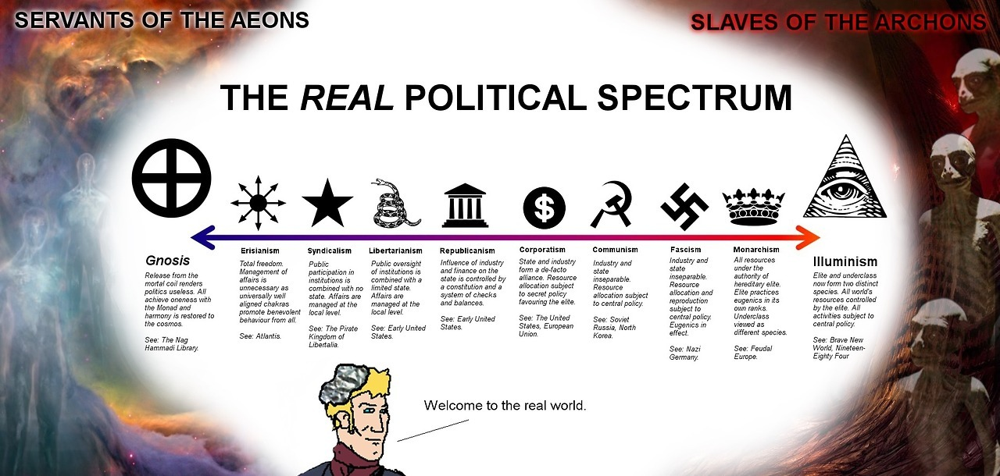
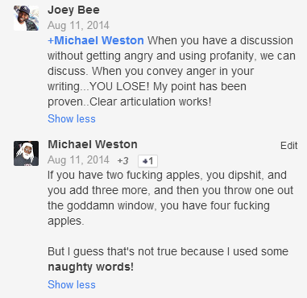

GO!
…someone else has made this joke already, somewhere, right?
GO!
…someone else has made this joke already, somewhere, right?
is there a consensus on the statement “being a nerd is more about announcing yourself as belonging to a particular cultural coalition than about announcing yourself to have certain personality characteristics”?
my cumulative exposure to the contexts in which it’s used indicates to me that it’s the former, but the giant thinks it’s more the latter
or is it both but people switch back and forth without indicating (or being aware?) that they’re doing so
Both meanings are definitely in use, and in use for different coalitions and characteristics at that. I’m not sure how much individuals switch back and forth but it’s definitely a case where there’s a cluster of related concepts and different people are picking different concepts as the “real” one.
All that being said: the line between advertising your personality characteristics and affiliating yourself with a cultural coalition is kind of fuzzy, because different cultures ascribe value to (and therefore attract people with) different characteristics.
I do think it’s something more substantive than the general “different cultures ascribe value to (and therefore attract people with) different characteristics.”
Nerd culture in particular, being a perpetually embedded subculture, spent decades conflating personality with culture – “this is the culture for People Like Us, and People Like Us are automatically drawn to our communities and our signifiers” – in a way that’s proving pretty tough to unravel even as broader social shifts are making that unraveling increasingly important.
Do not let your universal virtue schema become slave to your personal identity-construction.
This is a thing I see a lot, although right now it doesn’t seem helpful to call out specific examples. It’s a thing I’ve done a lot, probably a thing I still do sometimes, although Lord knows I try to be better than that.
You see someone talking about X, or doing X, or being X. And you think: “Man, I am not X. It is really important to me that I am not X. I would never ever in a million years want to be X, or want anyone to believe that I was X even for a moment.” And that’s just fine, as far as it goes.
But it’s so easy to underscore that identification by responding with, “X is stupid / evil / contemptible, and fie on anyone who is X.” Which is an attack on a way-of-being, and on a lot of people.
Maybe you really mean it. Maybe you really think that, in this particular way, everyone should be just like you. Maybe this is a case where it’s worth flattening the diversity of the world, where it’s worth cutting off a bunch of selves and narratives that people find rewarding, in order to get rid of the awfulness that is X. If that’s your position, then fine, go to. Some things genuinely are just bad.
But maybe you’re just trying to find a viscerally gripping way to shout, “BEHOLD! I AM NOT X! TAKE IT SERIOUSLY!” This is pretty likely, actually, based on my experience. And if that’s what you’re doing…then stop. Let the X people be X in peace, with your blessing. Their lives will be richer for it. Hell, your life will be richer for it – in an identitarian sense, being not-X is more meaningful and more salient in a world where it’s not a universal default.
This is one of the many mechanisms by which we might begin to reclaim reasoned discourse from the churning personal needs of the discoursers.
The best I can offer, right at this moment, is probably the Fate franchise. It has the EU-nature in spades.
The original piece of media, the Fate / stay night visual novel, is (more or less) a choose-your-own-adventure video game where the story can play out in multiple very-different ways. Each of the three main “routes” now has its own anime adaptation, plus there’s a prequel, plus there’s a billion other side stories and alternative-universe stories that manifest as various anime shows / light novels / video games / manga / etc. And, due to in-setting multiple-universes shenanigans, every jot and tittle of it is canon. It genuinely feels like a giant toy-shop where cool and brilliant stuff is crammed alongside the dumbest crap imaginable.
…the core Fate concept, for those who are curious, is “mages summon Ancient Heroes of Mythology / History for a battle royale in order to attain the ultimate wish-granting prize.” Except that, as you’d imagine from an EU, there’s a lot of deviation from the core concept.
As an introduction, I’d recommend either the Unlimited Blade Works anime (an adaptation of one of the original game’s main routes) or the Fate / zero anime (the prequel).
*********
There’s also, uh, Neon Genesis Evangelion. Which is legitimately brilliant art with a mostly-pointless-and-sucky EU attached. Watch the original series, watch the End of Evangelion movie, but if the thing you want is to play around in the deep waters of a huge sprawling canon then you’d probably be better off looking elsewhere.
The last bit is hard, as I am sure you were well aware. I intuitively sympathize with the tradeoff you were forced to make there and why it’s so noxious. TFA and TLJ really don’t seem worth Zahn, and a hundred other books besides.
But.
Rogue One was pretty good. Better than either of these really. Besides that…
Even granting that Zahn was great stuff, that misses the problem. Yes there was Admiral Thrawn… there was also a great, great deal of junk. “The Emperor’s clone is back! And Luke has embraced the Dark Side in order to infiltrate him by being his apprentice!” And we’re gonna keep making new Solo children, and killing them off, etc.
The EU epitomized the problem of “never being satisfied with enough.” They would keep churning out stuff, so long as there was a dollar to be made, and it led to a lot of crap. A lot worse than these two movies.
And well, there’s a logical end conclusion to ever-creative processes that never stop. The desire for more and more profit would inevitably spawn a movie that overwrites everything. (Much like a chaotic political system will eventually elect a dictator who overthrows the constitution behind it.)
***
On a less important and sentimental matter: I think your culture-war pattern matching brain is overfitting. You saw it yourself, if they’re pandering to progressive ideological caricatures… why is the angry, entitled white boy getting such nuanced treatment? Occam’s Razor is because that’s not what the writers are actually doing, and they are happy to use compelling characters in any form.
The casino planet is a rich vs poor morality tale? Then what do you make of the thief who cynically points out how the merchants of death profit off both Rebellion and First Order? And what do you make of that character’s eventual moral arc and how that reflects on his lessons?
Same for Admiral Holdo. If she’s supposed to be a righteous woman straight out of central casting, then why is she dressed very similarly to the casino players (check out that neckwrap.) Star Wars has always paid extremely close attention to how the upperclass and the proletariat dress, and Poe is identified as looking more like and convincing his fellow grunts more successfully.
It’s not that there aren’t some modern-political cliches in these characters, but either they are much more nuanced than you would expect for a political cartoon, or the authors had absolutely no idea what they were implying with these caricatures.
In no particular order…
**********
There’s the general-purpose all-consuming gripe about the new trilogy (which does cover Last Jedi but is entirely inherited from Force Awakens): this entire setup with the First Order and the Resistance is terrible, it makes no in-world sense and it completely devalues everything that happened in the original trilogy, just because the authors wanted a fan-pandering rehash of “gritty scrappy Resistance versus shiny all-powerful Nazi-coded Empire.”
**********
A number of memorable dramatic moments, moments that someone was clearly very proud of having come up with, don’t have any real payoff; they’re just kinda stuck there. The big offender here is the Cave of Infinite Time-Delayed Mirror Images, which gets an awful lot of buildup and an awful lot of cool design for something that ends with “and no one learns anything and it’s a total bust.” The thing with the Ancient Jedi Texts would be a lot more convincing if we had any knowledge of what was in them or any reason to care. Both of the super-thieves – White-Jacketed Space Raffles and the one they actually end up using – seem like potentially-interesting characters who don’t get explored enough to be actually interesting. Etc.
**********
…sigh.
Too many things feel too strongly like they’re directly and didactically connected to contemporary culture-war morals.
Especial shout-outs to –
1) Vice Admiral Wild-Berry Skittles Hair and her sub-plot about the dangers of cocky over-assertive men who think they know more than competent women.
2) Space Monte Carlo, which is Evil, because shiny rich people stuff is built on corruption don’tcha know.
Argh. I feel terrible about having this reaction, honestly. One of the things that’s made me saddest, over the past five years or so, is the extent to which culture war bullshit has started infecting my own perceptions of media. These narratives and messages are in the ether, and I know to look for them, so I can’t help seeing them, but maybe that says more about me and my discourse bubble than it does about the art. Whatever the case, I hate it.
…I am very curious how Ep. 9 is going to resolve things with Kylo Ren, since he is such a clear exemplar of the Edgelordy Self-Obsessed White Boy figure that serves as a totemic devil in these culture-war stories.
**********
Everything that people have been saying about the pacing problems, and the ridiculous plot contrivances that seem designed mostly to give Everyone Something to Do, is accurate. I don’t really have anything of my own to add.
**********
And then there’s the real underlying complaint, which is unfair, but so it goes.
I am bitter as all hell that the Expanded Universe was officially discarded to make room for this shit. Star Wars is some reasonably heavy-duty childhood resonance stuff for me, and 90%+ of the stuff that resonated has been disavowed. Force Awakens and Last Jedi, taken together, are not worth a dozen pages of a Timothy Zahn book.
It’s not that there aren’t some modern-political cliches in these characters, but either they are much more nuanced than you would expect for a political cartoon, or the authors had absolutely no idea what they were implying with these caricatures.
You can call it nuance, or for that matter cluelessness, if you like. It strikes me more as careful pander-management than either; Disney is masterful at pandering without crossing the (generally-perceived) line. The Holdo dynamic, for example, managed to be All About Mansplaining without committing “character assassination” on fan-favorite Poe. But whatever. My culture-war-aware brain is overfitting, as a general matter, so I’m not inclined to push points of this kind too hard.
Regarding the other thing –
– yeah, as far as it goes, that is a fair characterization of the EU.
Look. I am a nerd, an old-school nerd by the reckoning of the present day. I am very, very familiar with media franchises that run on the model of “just keep cranking out material so long as there’s a dedicated captive audience that will keep on buying it.” That’s pre-2014 Star Wars, yes, and also Doctor Who, and traditional comics-centric Marvel / DC, and Dragonlance, and Fate. Hell, it’s the Cthulhu Mythos, for that matter. There are a lot of Expanded Universes out there.
And, yes, Expanded Universes tend to generate an awful lot of crap.
Nonetheless I like them, as a phenomenon. I like that there are enthusiastic fan communities whose members actually care about canon, who want to know what the Jedi of 1500 years ago were doing and are willing to pay for the privilege. I like that a few well-conceived concept touchstones can be used to unite the work of lots of different artists, some of whom will actually turn out to be good, and make that work accessible and compelling to lots of potential fans. I like being able to attach myself to a given fictional universe by diving into its trackless depths and looking around for something that matches well with me personally.
It’s not a great setup for High Art. High Art kinda has to be complete in itself, and can’t bear the weight of countless on-brand mediocrities. But, well, Star Wars was never going to be High Art. And I much prefer the EU model to the “corporately-massaged perfectly-anodyne core canon perfectly engineered for mainstream success” model.
…which is what we have now, for the highest tier of geek media, at least in the West. Geek stuff is too popular to be allowed to ghettoize itself with a labyrinth of weird, cool, often-stupid shit. I honestly find it a great relief that anime franchises seem to be continuing mostly on the older model, at least for now.
In no particular order…
**********
There’s the general-purpose all-consuming gripe about the new trilogy (which does cover Last Jedi but is entirely inherited from Force Awakens): this entire setup with the First Order and the Resistance is terrible, it makes no in-world sense and it completely devalues everything that happened in the original trilogy, just because the authors wanted a fan-pandering rehash of “gritty scrappy Resistance versus shiny all-powerful Nazi-coded Empire.”
**********
A number of memorable dramatic moments, moments that someone was clearly very proud of having come up with, don’t have any real payoff; they’re just kinda stuck there. The big offender here is the Cave of Infinite Time-Delayed Mirror Images, which gets an awful lot of buildup and an awful lot of cool design for something that ends with “and no one learns anything and it’s a total bust.” The thing with the Ancient Jedi Texts would be a lot more convincing if we had any knowledge of what was in them or any reason to care. Both of the super-thieves – White-Jacketed Space Raffles and the one they actually end up using – seem like potentially-interesting characters who don’t get explored enough to be actually interesting. Etc.
**********
…sigh.
Too many things feel too strongly like they’re directly and didactically connected to contemporary culture-war morals.
Especial shout-outs to –
1) Vice Admiral Wild-Berry Skittles Hair and her sub-plot about the dangers of cocky over-assertive men who think they know more than competent women.
2) Space Monte Carlo, which is Evil, because shiny rich people stuff is built on corruption don’tcha know.
Argh. I feel terrible about having this reaction, honestly. One of the things that’s made me saddest, over the past five years or so, is the extent to which culture war bullshit has started infecting my own perceptions of media. These narratives and messages are in the ether, and I know to look for them, so I can’t help seeing them, but maybe that says more about me and my discourse bubble than it does about the art. Whatever the case, I hate it.
…I am very curious how Ep. 9 is going to resolve things with Kylo Ren, since he is such a clear exemplar of the Edgelordy Self-Obsessed White Boy figure that serves as a totemic devil in these culture-war stories.
**********
Everything that people have been saying about the pacing problems, and the ridiculous plot contrivances that seem designed mostly to give Everyone Something to Do, is accurate. I don’t really have anything of my own to add.
**********
And then there’s the real underlying complaint, which is unfair, but so it goes.
I am bitter as all hell that the Expanded Universe was officially discarded to make room for this shit. Star Wars is some reasonably heavy-duty childhood resonance stuff for me, and 90%+ of the stuff that resonated has been disavowed. Force Awakens and Last Jedi, taken together, are not worth a dozen pages of a Timothy Zahn book.
Episode VIII retconned away most of the new stuff established in episode VII. It also retconned a bunch of stuff from the other trilogies.
There was a lot of set-up in TFA: Who are Rey’s parents? What is Snoke’s end game? What‘s up with Phasma? How will the First Order stomach the destruction of Starkiller Base? How powerful is the First Order anyway? Can the Republic recover from the destruction of
CoruscantHosnian Prime?Can you lower the stakes even further? And who cares?
You have helpfully already grouped these questions into the relevant answers.
- Who are Rey’s parents?
- What is Snoke’s end game?
These things deserved to be tossed into the mud, and was the best decision Rian made.
- What‘s up with Phasma?
Yeah that sucked. Though don’t let memory exaggerate for you how much screentime Boba Fett really got, relative to how much we’ve built him up.
- How will the First Order stomach the destruction of Starkiller Base?
- How powerful is the First Order anyway?
- Can the Republic recover from the destruction of
CoruscantHosnian Prime?These were treated as trivial, ephemeral concerns within TFA from the getgo. Their appearance and destruction were already inconsequential, and followed dream logic. TLJ did not really contribute to that.
The last three are important to get me to care about the success of the resistance! I still don’t know what’s at stake! It’s like James Bond being saving the country of Liechtenstein from a communist invasion and dictatorship.
“How powerful is the First Order anyway” is fucking vital for the movie to work. Just because a nerd would care about something, and you feel contempt for nerds, doesn’t mean it’s inconsequential. If we don’t know how powerful the First Order is or how the fuck they got so powerful after what we’ve seen in ROTJ and TFA, then we don’t know the stakes and context for the conflict. We can’t care about opposing them, because without that information, their victory and loss follows no rules.
I dont think BamBam disagrees with you on that one - just that TFA *also* did not care about this completely vital thing. There was absolutely no politics in TFA, the destruction of Coruscant elicited almost no reaction from anyone in the movie, the comparative strengths and organizations of the Republic and the First Order were never delineated, and so on. If you saw TFA, you never should have expected any discussion of the politics of the universe in TLJ, it was clear the series did not care.
Okay, but TLJ seems to be focused on throwing out a bunch of other stuff from TFA, saying “no forget that” and “that’s dumb that doesn’t count”. It threw out Snoke’s plan and Rey’s parentage, which TFA set us up to believe were important. So, if the movie is changing course so hard and throwing out so much of what TFA did, why double down on THIS problem, and why should we expect continuity in this issue from a movie that doesn’t have that same continuity for anything else?
I have any number of bones to pick with The Last Jedi, but its handling of the Rey’s-parentage issue is not one of them.
By which I mean – it didn’t come across as “whoops, we decided that we want to take things in a different direction, never mind about all that stuff from the first movie.” It came across as deliberately raising expectations of a particular kind in order to make a point by undercutting them.
Star Wars has always been a story about dynastic ties and destiny-arising-from-birth. The narrative hinge of the entire original trilogy is “Vader is Luke’s father.” The prequel trilogy was about a messiah who could be foreseen from birth by midichlorian count, and about his forming predestined connections with all sorts of [metanarratively] famous people, and about the spiritual Yoda –> Dooku –> Qui-Gon –> Obi-Wan –> Anakin lineage. So when The Last Jedi comes out and teases “maybe Rey is the child of important people,” it’s proffering another iteration of exactly the story that we’re awaiting. And when it then (in a moment of great drama) says “nope, Rey’s parents are no one special, whatcha gonna do now?” – it’s attacking that trope, it’s saying “heroism is not a dynastic thing,” it’s saying “you don’t have to be connected to Special People in order to be special yourself.”
And maybe that makes you cheer, or maybe it annoys you a bit, in a “mumble grumble Star Wars believes in dynasties and you should respect that” kind of way. Either of those responses is reasonable. But it’s not like this setup was an accident.
A similar point, less strongly, could be made about Snoke. “Turns out he’s not interesting, he doesn’t have some kind of cool backstory or mastermind plan, he’s a generic creepy dictator who serves as a stepping-stone in Ben Solo’s saga. Sometimes the importance doesn’t lie where you think it does, sometimes the tropes don’t pan out in exactly the way that seems most obvious.”
I think I’ve had three people that don’t really speak to each other about talk how the Bush years were actually worse than the current years with the “with-us-or-against-us“ thing. With Trump, it’s a small, if loud and shrill group, but in those years it seemed like the damn nation thought people against the Iraq war were purely evil traitors.
Freedom fries. You didn’t even have to be explicitly against the war, just being okay with the concept of France was enough to justify a boot in your ass.
There’s a Boston Legal episode about an Edwin Starr impersonator who’s not allowed to sing “War” (huh, what is it good for…) because it could be construed as anti troops/bush/government. It’s a very realistic plot.
I know I say this a lot but anyone too young to remember the Bush years should watch that show, it’s a very good example of the sorts of insane shit that people were arguing about back then.
Yeah. Trump may be worse (and the Republican Party may be crazier/more openly awful), but Trump doesn’t have Dick Cheney. Or anyone half as competent/evil.
Knock on wood.
Does anyone remember Trent Reznor not going to the… vmas one year I think it was, because he wanted to perform “Capital G”, a song criticizing the government, in front of a picture of Bush and they told him he couldn’t? And he was like fuck you then and just didn’t show?
If y’all wonder why older tumblerians get twitchy about censorship that shit is why.
Hell, one day when I was in grad school I was walking around and said something like “I hate Bush” to the person I was with and they shushed me in obvious fear.
If you wonder why I think free speech is an idea, not just the letter of a law… there you go.
The Bush years were awful.
Something that I just realized that younger tumblrites or folks outside of the US might not get:
“Doing X is letting the terrorists win” has become a hyperbolic meme but people were fucking serious about that.
I was just a wee baby high schooler for discussions about the patriot act and libraries handing over information and the government tracking searches, but I knew I didn’t like it, I knew that it was a bad idea and said so.
“What, do you want the terrorists to win? We’re just going to let everyone buy explosives with no oversight because you wanna read fanfic at the library? What if your mom had been on those planes, how would you feel about it then? We have to do this to keep everyone safe, what is wrong with you that you don’t want to stop this from happening again?”
In early 2002 I was a wee baby high schooler at an airport for a school conference. I’d left my boarding pass at the security station and ran back to get it once I’d realized it was lost. When I stumbled up to the metal detector (which seems so quaint in this era of full body scans) two national guardsmen in full BDUs with helmets and armor turned and pointed their M4s at me. “Are you Allison?” one barked and I unfroze long enough to nod. He handed me my boarding pass. “Be more careful!” When I got back to my group I was bawling and having what I didn’t realize at the time was a panic attack (having guns pointed at you is extremely scary).
“Well what did you think, you can’t just go running around an airport! They’ve gotta keep everyone safe - of course they’ve got military guns at the terminal, what, you think terrorists should just be able to waltz onto an airplane whenever they please?”
(Sidenote, I don’t check bags anymore because they always get opened and examined for “random” searches and I get pulled aside and patted down more than anyone else I know and I’m 100% convinced that’s because of this one mislaid boarding pass when I was 15)
Don’t want people tortured in prison? You’re letting the terrorists win. Questioning the validity of invading Iraq? You’re anti-american and letting the terrorists win. Sitting for the pledge of allegiance? You hate this country, which is what the terrorists want and you are therefore letting the terrorists win.
Saying “if we change our whole way of life and stop protecting people’s rights and freedoms then the terrorists HAVE won and we’re sacrificing liberty for security which is exactly the kind of thing you assholes say we shouldn’t do” to your political science professor in college? Oh my god maybe you are a terrorist.
Also tumblr kiddos - read up on the Dixie Chicks:
During the run-up to the invasion of Iraq, the Dixie Chicks performed in concert in London on March 10, 2003, at the Shepherd’s Bush Empire theatre in England. This concert kicked off their Top of the World Tour. During the introduction to their song “Travelin’ Soldier”, Natalie Maines, who along with Robison and Maguire is also a native of Texas, said:
“Just so you know, we’re on the good side with y'all. We do not want this war, this violence, and we’re ashamed that the President of the United States is from Texas.”[41][…]
Maines’s remark sparked intense criticism;[44] media commentators claimed that she should not criticize Bush on foreign soil. Maines responded, “I said it there ‘cause that’s where I was.”[45]
[…] Maines attempted to clarify matters on March 12 by saying, “I feel the President is ignoring the opinions of many in the U.S. and alienating the rest of the world.”[47]
The statement failed to appease her critics, and Maines issued an apology on March 14: “As a concerned American citizen, I apologize to President Bush because my remark was disrespectful. I feel that whoever holds that office should be treated with the utmost respect. We are currently in Europe and witnessing a huge anti-American sentiment as a result of the perceived rush to war. While war may remain a viable option, as a mother, I just want to see every possible alternative exhausted before children and American soldiers’ lives are lost. I love my country. I am a proud American.”[48][49]
In wake of the statement against Bush, many supporters of the group dropped their support. […] In one famous anti-Dixie Chicks display, former fans were encouraged to bring their CDs to a demonstration at which they would be crushed by a bulldozer. […] Bruce Springsteen and Madonna both felt compelled to come out in support of the right of the band to express their opinions freely; however, Madonna herself postponed and then altered the April 1 release of her “American Life” video in which she threw a hand grenade toward a Bush look-alike, after witnessing the backlash against the Chicks.[51][52]
Colorado radio station KKCS suspended two of its disc jockeys on May 6 for playing music by the Dixie Chicks.[60] On May 22, at the Academy of Country Music awards ceremony in Las Vegas, there were boos when the band’s nomination for Entertainer of the Year award was announced. However, the broadcast’s host, Vince Gill, reminded the audience that everyone is entitled to freedom of speech. The academy gave the award to Toby Keith, who had been engaged in a public feud with Maines ever since she had denounced his number one hit “Courtesy of the Red, White, & Blue (The Angry American)” as “ignorant” the year before.
That Toby Keith song was the one I kind of obliquely referenced in my post up there, the one with the lyrics:
Justice will be served and the battle will rage
This big dog will fight when you rattle his cage
And you’ll be sorry that you messed with
The U.S. of A.
‘Cause we’ll put a boot in your ass
It’s the American wayThe hyper-militarization of the police, invasive overreach and surveillance of our digital lives by the NSA, the jingoism and mandatory patriotism that have transmuted into virulent nationalism, and the longest war in US history are relics of Bush.
*Fuck* Bush and the awful, imposing, frothing all-or-nothing patriotism that so many people were expressing at that time.
Ofextremelycourse fuck Trump and his nationalist, paternalist, misogynist supporters too.
The impression I’m getting is that while Trump as a person/president is more awful than Bush, probably >50% of the country thinks he’s terrible (just like 3 percentage points of that not enough to vote for Clinton), whereas in the Bush years there was strong public support?
Honestly even if I thought the two wars were good ideas I’d be pretty horrified by that level of grassroots censorship; maybe what we’re looking at here is less the president himself and more the public as a whole.
You gotta remember that Afghanistan, Iraq, the PATRIOT act, all of it were supported by both parties. Trump polarized everyone right off the bat, but then you would have senior democrats saying you were divisive or naive for going against those Bush policies. The antiwar crowd were all Dumb Fucking Hippies to everyone.
the decadent left in their coastal enclaves who may mount a fifth column, indeed
being in the UK and ‘bush/ iraq war sucks’ seemed to be the consensus i assumed the same was true in the US, but wow.
Experientially for most rat-tumb people, the difference was: you knew Bush voters, and had to argue with them, and put up with their bullshit arguments. This meant it was constantly infuriating to argue against, but also you were aware of some of their justifications.
Trump’s support is so class-shifted, and we’ve filtered our cohort so much, that most of you don’t know Trump supporters - not in large and frequent numbers - and so you experience him only as bizarre parodies of what the people you read or what trolls are the loudest.
It’s also worth noting that the Bush Thing and the Trump Thing, independent of their internal inherent qualities, arose during very different cultural / political moments.
The late ‘90s was the End of History, remember, the point at which most of the country thought that we’d Solved Government and that politics didn’t really matter anymore. The dittoheads with their Clinton Derangement Syndrome Mk. I were a fringey phenomenon, and anything remotely resembling a passionate active left was even fringier. The Republican party elites kept trying to engulf the country in a passionate culture war, culminating in the Clinton impeachment proceedings, and…the country just kept laughing at them.
The 2000 election was played out in most of the mainstream media – and, I believe, in the hearts of most Americans – as Gush v. Bore, a pointless dumb-show that wouldn’t really matter to anything, relevant mostly insofar as it produced goofy SNL jokes.
So when 9/11 landed like a brick in our laps, we genuinely did not know what to do, we were in a situation for which our political thinking-of-the-time had no script. A lot of people and institutions fell back on WWII-style thinking: y’know, “this is the Moment of Crisis, time to pull together as a nation and put aside our petty squabbles and stand behind our brave leaders etc.” Hillary Clinton supported Bush’s war plans. The New York Times supported Bush’s war plans. All sorts of notionally left/liberal thinkers supported Bush’s war plans.
…which meant that, if you were genuinely anti-war, if you were sufficiently political (on the anti-Bush side) that you weren’t inclined to get swept up in the zeitgeist – if you were embedded in a little cultural bubble of Super Leftism, for example, as I was at the time – it was incredibly scary. The world was turning upside down, factions were dissolving and realigning, everything was happening super fast. You were watching almost everyone around you, including everyone in a position of power, going nuts.
When the Bush regime started screwing up enough that the WWII thing became totally non-viable, and Bush became an official Bad Guy for half the country, a lot of the resulting cultural fallout was driven by the panicky paranoia that had taken root on the residual angry left during that period. And a lot of it was driven by the sense of deep betrayal that the mainstream-left was feeling.
When the Trump phenomenon began, the country had been riven by a vicious internal culture war for something like a decade. If you’re a denizen of Blue America, Trump is just the culmination of all the things you’d already been thinking about Red America – yeah, OK they really are that stupid, that crass, that mean, that corrupt, that racist, etc. etc. etc. His presence on the political stage is driving a few elite-conservative-thinker types like Douthat into paroxysms of identity crisis, but mostly he’s inspiring people on the left to retrench and Fight Even Harder in the battles that they were already fighting. We may feel a certain level of horrified awe as we ask ourselves “how low can he go?,” but honestly no one is really surprised by anything that’s come out of his regime.
A point that often gets neglected in discussions about tone policing is that it can be okay for someone to express something angrily and also okay for others to choose not to listen to it for that reason. These aren’t contradictory, and there are many situations where they’re both true.
There’s an inherent intimacy in listening to someone express strong emotion and it’s always permissible to opt out of intimacy.
This is definitely the correct personal attitude to take: to neither shame the angry/acting-out person, but not to give them undue sway either.
However this becomes a real problem in a larger social situation. Anger (like a smaller form of violence) is an extremely effective tactic for getting people to agree with you. It is so effective that we have basically banned it as a typical rhetorical tool, because both emotional and physical violence overwhelm the virtues we normally prize in conversation: accuracy, fairness, probity, etc.
When you give people “permission to be angry”, you are often handing them the keys to social victory. You may personally resist their anger, but most other people will say “this victim who is screaming about their pain needs to be placated, and your dispassionate defenses of yourself can go hang.” When one side of a dispute is allowed to be angry, and the other isn’t, we are choosing a likely victor. This is why we deter that with “overly angry people automatically lose” heuristics.
(This does not just apply to the obvious social justice circumstances, but also in the reactionary racist environment that preceded them. White people could be angry, black people couldn’t be without looking threatening, and so white people would win arguments like “how can you note allow the death penalty for this type of monster?”)
Ideally, you should have omni-compassionate environments that listens to the emotional rawness in everyone’s pain, but then makes its judgments coolly. But we can’t always (or ever) get that. In which case “no one can be publicly angry” is a rule that leads to better results than “some specific people can be publicly angry.”
This is very true.
It is also worth noting that “[only] some specific people can be publicly angry” isn’t the only failure mode here. Even if your community isn’t doing that, even if you genuinely allow everyone to be emotionally expressive, you’ve effectively turned almost every dispute into a contest of “who can most convincingly perform anger and pain?” Down that road lies a lot of terribleness.
[I suppose I should make it clear that my analysis, and @bambamramfan‘s, apply far more in certain cultural and social milieus than in others. There are places where performative public anger has been more-or-less normalized – and where everyone knows how to roll with it when people yell and scream and make highly-charged personal claims, because that happens all the time. There are also places where the norms dictate a much higher level of restraint in the general case, where someone crying and making a scene in public indicates an emergency on par with someone having a heart attack. My world is much closer to being that second thing, and so I’m used to performative anger being a social superweapon, but I’m aware that at least in some cases this is largely a matter of cultural translation.]
A point that often gets neglected in discussions about tone policing is that it can be okay for someone to express something angrily and also okay for others to choose not to listen to it for that reason. These aren’t contradictory, and there are many situations where they’re both true.
There’s an inherent intimacy in listening to someone express strong emotion and it’s always permissible to opt out of intimacy.
This is definitely the correct personal attitude to take: to neither shame the angry/acting-out person, but not to give them undue sway either.
However this becomes a real problem in a larger social situation. Anger (like a smaller form of violence) is an extremely effective tactic for getting people to agree with you. It is so effective that we have basically banned it as a typical rhetorical tool, because both emotional and physical violence overwhelm the virtues we normally prize in conversation: accuracy, fairness, probity, etc.
When you give people “permission to be angry”, you are often handing them the keys to social victory. You may personally resist their anger, but most other people will say “this victim who is screaming about their pain needs to be placated, and your dispassionate defenses of yourself can go hang.” When one side of a dispute is allowed to be angry, and the other isn’t, we are choosing a likely victor. This is why we deter that with “overly angry people automatically lose” heuristics.
(This does not just apply to the obvious social justice circumstances, but also in the reactionary racist environment that preceded them. White people could be angry, black people couldn’t be without looking threatening, and so white people would win arguments like “how can you note allow the death penalty for this type of monster?”)
Ideally, you should have omni-compassionate environments that listens to the emotional rawness in everyone’s pain, but then makes its judgments coolly. But we can’t always (or ever) get that. In which case “no one can be publicly angry” is a rule that leads to better results than “some specific people can be publicly angry.”
This is very true.
It is also worth noting that “[only] some specific people can be publicly angry” isn’t the only failure mode here. Even if your community isn’t doing that, even if you genuinely allow everyone to be emotionally expressive, you’ve effectively turned almost every dispute into a contest of “who can most convincingly perform anger and pain?” Down that road lies a lot of terribleness.
bpd-dylan-hall-deactivated20190:
(1) I don’t pick who I vote for based on their personal worth as human beings
(2) liberal democrats are not apologists for a regime that killed tens of millions of people and if you are an apologist for such a regime it is a very bad idea to give you the ability to use state violence
(2) Yes they are.
…which is not to say that I think being a liberal democrat is a particularly bad idea, as such things go, or that tanky beliefs are particularly trustworthy. But “you’re wrong because your ideology ties you to a historical entity responsible for grotesque atrocities” is not a game that anyone wins.
This kind of “is having a kid ever OK” shit flabbergasts me.
Just posted the following question:
“Hello. Thank you for the opportunity to ask a question. How would you respond to the following?
“Any meta-ethics rests on a foundation of fitness, i.e. being to the benefit of survival and reproduction. All higher order modes are either offshoots of this (how to keep people from killing each other) or artifacts of the ongoing debugging of consciousness (itself a product of selection) as a mode in which the ethical discussions play out (the nature of pain, suffering, happiness, etc.). Things seeming to have a point, the quest for meaning, utilitarian heuristics, faith, virtues, etc all derive from some desire to secure the continuation of some essence into the future.
“Your formulation, as you admit, is not intuitive. I’d venture to say it is anti-intuitive to the vast majority of the population. Anyone who buys what you are saying is less likely to survive and reproduce. So how can a philosophy which is itself maladaptive be in keeping with any ethical system?”
Let you know if I get a response.
This is a super weird formulation.
Any meta-ethics rests on a foundation of fitness, i.e. being to the benefit of survival and reproduction.
I mean, you can employ whatever meta-ethic you want, that’s the beautiful legacy that David Hume left to us poor sinners, but…this doesn’t reflect either any kind of abstract necessity or any kind of common concretely-grounded foundation for practical ethics. So I’m having trouble seeing what good it does either theoretically or pragmatically.
Theoretically speaking, as I said, your terminal values are ultimately going to have to stand on their own (because you can’t derive ought from is, to put it in shorthand). If you don’t like the demands of fitness-based evolutionary ethics, if they strike you as being evil, there is nothing logical or empirical that can compel you to accept them as good. [Not living up to the demands of evolutionary fitness will make you less evolutionarily fit, of course…it may even make your moral system less evolutionarily fit, if it turns out that such things primarily piggyback through human reproduction…but, as the Sage of Ethics says, “who cares?”]
Practically speaking –
– this was originally like a ten-paragraph essay, but in fact I think it’s simpler and easier just to say “it turns out people care about being happy and fulfilled etc. way more than they care about fitness, it has been repeatedly demonstrated that they will sacrifice fitness for other moral goods, and so you schema turns out to be just as counter-intuitive to the population-at-large as the schema against which you’re arguing.”

discuss
(found on /tg/)Great chart, but Yoda is the horseshoe here.
The Light Side and the Dark Side are but two faces of the same coin. Only Ron Paul offers a true alternative!
Just a reminder: there are still normies in the world. Lots of them. In fact, they probably still constitute a strong outright majority of the population, although the proportions are less overwhelming than they used to be*.
The fact that the public and semi-public conversation spaces are all filled with weird-ass warring tribes just tells you what sorts of people are really interested in carrying out public and semi-public conversations.
* at least within wealthy-ish more-or-less-cosmopolitan First World etc. societies
Clearly we haven’t had an argument about “reasonable people” in a while.
It’s interesting that you use normies here to refer both in the contexts of political vanguards, and geek interests (and their difference from them.) This analogy shows why you’re wrong.
Remember how popular Games of Thrones, and Avengers, and World of Warcraft, and Angry Birds got? Once the domain of a stigmatized minority, once they became mainstream acceptable, they became incredibly popular. It’s like they were incubating and learning the tricks to appeal most directly to our stimulus centers… and then once the stigma went down, they spread amongst the “normal” populace like wildfire.
Same with political tactics. There’s a stigma (or was) against being “that guy (political edition).” It’s more casual to live and let be, and only amongst some addicted extremists do they involved in the “circular firing squads of constant political debate.” Man, who says stuff like “tone policing” and “all my opponents are Nazis?” Just chill out and leave politics out of it.
Except, once the walls come down, and being a political obsessive is admirable and socially useful. Then, much like GRRM showed us what the “good stuff” was, tumblr arguments pre-figured what arguments you’ll see play out and dominate the “normies” once they too think “the personal IS political.”
It’s whiplash how fast people go from “we don’t police political opinions here” to “we are committed to making this a safe space” after all.
You’re reading a lot into a short and deliberately-vague post.
But I will say:
It’s true that, with good content and good marketing, you can popularize The Avengers and A Song of Ice and Fire, transforming them from niche geek media into normie media. But if you’re an old-school geek, and you expect the new normie fans to appreciate those things the way in the manner that you and your friends appreciated them in the old days, you are going to be very disappointed. More relevantly, if you’re an old-school geek expecting that all these new fans are going to be friends and kindred spirits based on their fondness for your beloved media, you are going to be very disappointed.
And it’s true that, with the right kind of cultural suasion, you can popularize concepts like “safe space” and “toxic abuser” and push them into the mainstream. But if you’re a typical sort of social-justice-driven Tumblr denizen, and you imagine that all these newly-”converted” corporate citizens and SNL-watchers are going to share your social norms and your fundamental values in a way that makes you comfortable…
This analogy between political and entertainment interests is correct as far as it goes, but n.b. a relevant difference is that, to a significant degree, political subcultures want (or should want) to become the superculture, even in a bastardized form, whereas there is no need for entertainment subcultures to care about this.
Like, I’m into tabletop roleplaying games and far-left politics, and both of those have become a lot more cool and popular over the past couple years (while still remaining niche in an absolute sense), probably as a result of the general processes alluded to above. As it happens I’m.
[Your post seems to have been cut off mid-sentence. I’m honestly not sure where you were going there.]
True.
It’s worth noting, though, in a now-we’re-off-on-a-wild-tangent kind of way, that there’s a natural and hard-to-escape pressure that pushes entertainment subcultures to want to grow and grow and mainstream-ize. Content creators like the idea of becoming rich and famous. Alienated low-status fans like the idea of having their beloved Thing become respectable for once; they like the idea that people with their interests might be widely perceived as cool, not as hopelessly ridiculous. Pretty much all fans like the idea of more Thing being made, overall, with more budget behind it. Pretty much all fans like the idea of finding new friends with whom to share the Thing.
Often this ends up going very poorly even when it succeeds, and leaving a lot of people very sad. See: video games over the past fifteen years.
There are ways to guard against it, mostly involving hipsterism and deliberate preemptive rejection of mainstream success, but these of course have their own costs.
discuss
(found on /tg/)
Just a reminder: there are still normies in the world. Lots of them. In fact, they probably still constitute a strong outright majority of the population, although the proportions are less overwhelming than they used to be*.
The fact that the public and semi-public conversation spaces are all filled with weird-ass warring tribes just tells you what sorts of people are really interested in carrying out public and semi-public conversations.
* at least within wealthy-ish more-or-less-cosmopolitan First World etc. societies
Clearly we haven’t had an argument about “reasonable people” in a while.
It’s interesting that you use normies here to refer both in the contexts of political vanguards, and geek interests (and their difference from them.) This analogy shows why you’re wrong.
Remember how popular Games of Thrones, and Avengers, and World of Warcraft, and Angry Birds got? Once the domain of a stigmatized minority, once they became mainstream acceptable, they became incredibly popular. It’s like they were incubating and learning the tricks to appeal most directly to our stimulus centers… and then once the stigma went down, they spread amongst the “normal” populace like wildfire.
Same with political tactics. There’s a stigma (or was) against being “that guy (political edition).” It’s more casual to live and let be, and only amongst some addicted extremists do they involved in the “circular firing squads of constant political debate.” Man, who says stuff like “tone policing” and “all my opponents are Nazis?” Just chill out and leave politics out of it.
Except, once the walls come down, and being a political obsessive is admirable and socially useful. Then, much like GRRM showed us what the “good stuff” was, tumblr arguments pre-figured what arguments you’ll see play out and dominate the “normies” once they too think “the personal IS political.”
It’s whiplash how fast people go from “we don’t police political opinions here” to “we are committed to making this a safe space” after all.
You’re reading a lot into a short and deliberately-vague post.
But I will say:
It’s true that, with good content and good marketing, you can popularize The Avengers and A Song of Ice and Fire, transforming them from niche geek media into normie media. But if you’re an old-school geek, and you expect the new normie fans to appreciate those things the way in the manner that you and your friends appreciated them in the old days, you are going to be very disappointed. More relevantly, if you’re an old-school geek expecting that all these new fans are going to be friends and kindred spirits based on their fondness for your beloved media, you are going to be very disappointed.
And it’s true that, with the right kind of cultural suasion, you can popularize concepts like “safe space” and “toxic abuser” and push them into the mainstream. But if you’re a typical sort of social-justice-driven Tumblr denizen, and you imagine that all these newly-”converted” corporate citizens and SNL-watchers are going to share your social norms and your fundamental values in a way that makes you comfortable…
Nothing can actually be perfect, so many people have a great suspicion of groups or individuals which seem to have it all together. We do not believe that anyone can actually be that organized, charming, and happy, so there must be something wrong. Let’s call this the Stepford Wives Fallacy.
In its weakest form, this is just the recognition that no one is perfect, so a person has no visible flaws probably has a few small imperfections that you’re not seeing. This form of the belief is actually true, and not a fallacy.
The stronger, fallacious form operates on the hidden assumption that all people and communities must have roughly the same level of dysfunction. So if someone(s) seem to be doing better, they must have something especially bad that they’re hiding, which, if known, would bring their degree of dysfunction back up to the average level.
In its strongest form this fallacy is actually used as a kind of litmus test. Something being superficially flawless, or even significantly better than average, is treated as positive evidence that something especially heinous is going on unseen, and people under the influence of the strong form of this fallacy often express an explicit preference for visibly dysfunctional communities and individuals.
Sometimes people falling prey to the Stepford Wives fallacy are themselves the victims of communities or individuals which looked perfect to others. These people at least have an excuse. More often, however, this fallacy is simply used as a way to discount people who are your political or personal rivals by ascribing unnamed crimes to them without evidence.
I suppose the fallacy that you describe probably does exist in the form that you describe it, in the sense of “there are people who make those particular calculations for those particular reasons,” but…at least in my experience, you more often get a very similar result from a form of logic that makes a lot more sense.
In this model, the reasoning doesn’t rest on some kind of abstract variable representing “things being wrong in the community,” but rather on specific stereotypes of community types (based on experience, cultural osmosis, etc.).
Free-happy-joyful-creative-whatever communities – “good communities,” by the standards of the people making the calculations – tend to involve a lot of expressiveness, a lot of unrestrained communication, a lot of people wearing their hearts on their sleeves. When you enter such a community, you’re likely to encounter its dramas and dysfunctions very quickly. Maybe there will be very few such problems, maybe there will be a fair number, but either way they’ll be visible on the surface.
There are, of course, many different varieties of bad communities. But one of the best-understood is the Repressed Vicious Puritan Community, where there’s lots of abuse and cruelty behind closed doors, but everyone is super concerned with keeping up an appearance of flawless functionality.
So if you find a group of people who seem flawlessly functional at first glance, it might be that they actually are, but it’s more likely that they’re hiding whatever dysfunctions they have…and “taking pains to hide your dysfunctions” is a red flag for Repressed Vicious Puritan Communities.
I don’t fully buy into this model by any means. Given your general predilections, I assume you buy into it even less. But it’s basically coherent, whereas “there are no variations in functionality” is not. RVPCs are real, although reports may differ on how widespread they are, and taking pains to avoid them isn’t crazy.
Just a reminder: there are still normies in the world. Lots of them. In fact, they probably still constitute a strong outright majority of the population, although the proportions are less overwhelming than they used to be*.
The fact that the public and semi-public conversation spaces are all filled with weird-ass warring tribes just tells you what sorts of people are really interested in carrying out public and semi-public conversations.
* at least within wealthy-ish more-or-less-cosmopolitan First World etc. societies
I am feeling very called-out by this Joseph Heath essay on the Culture novels.
Given all these options, how do you choose? More fundamentally, who are you? What is it that creates your identity, or that makes you distinctive? If we reflect upon our own lives, the significant choices we have made were all in important ways informed by the constraints we are subject to, the hand that we were dealt: our natural talents, our gender, the country that we were born in. Once the constraints are gone, what basis is there for choosing one path over another?
This is the problem that existentialist writers, like Albert Camus, grappled with. The paradox of freedom is that it deprives choice of all meaningfulness. The answer that Camus recommended was absurdism – simply embracing the paradox. Few have followed him on this path. Sociologically, there are generally two ways in which citizens of modern societies resolve the crisis of meaning. The first is by choosing to embrace a traditional identity – call this “neotraditionalism” – celebrating the supposed authenticity of an ascriptive category. Most religious fundamentalism has this structure, but it also takes more benign forms, such as the suburban American who rediscovers his Celtic heritage, names his child Cahal or Aidan, and takes up residence at the local Irish pub. The other option is moral affirmation of freedom itself, as the sole meaningful value. This is often accompanied by a proselytizing desire to bring freedom to others.17
Because of this, there is a very powerful tendency within liberal societies for the development of precisely the type of “secular evangelism” that Banks described. It acquires a peculiar urgency, because it serves to resolve a powerful tension, indeed to resolve an identity crisis, within modern cultures. It often becomes strident, in part due to a lingering suspicion that it is not strong enough to support the weight that it is being forced to bear.
There’s already a well-known identity for people who seek struggle for the sake of struggle: gamer.
My usual serious position on this is that the need for “purpose” is filled by picking goals and then working to achieve them. Which is basically gaming.
I may be overestimating other people’s ability to gain fulfillment from picking arbitrary goals and then achieving them, though. I may also be overestimating people’s ability to achieve arbitrary goals.
Actually arbitrary goals? Yeah, that’s so rare as to be not-worth-considering. Even a very bored, aimless person isn’t going to be happy if you dump a bucket of sand on his desk and tell him to count the grains.
(Yeah, yeah, I know, the “picking the goals” part matters too. The Buridan’s Ass problem is the real issue here. Under most circumstances, it’s pretty damn hard to go for an arbitrary goal if you yourself feel that it’s arbitrary.)
That said: it’s not that hard to make actually-pretty-damn-arbitrary goals seem compelling and appealing if you dress them up right. Flavor matters, narrative matters, bells and whistles matter, identity hooks matter. This is the engine that makes grindy video games run. And, frankly, a lot of my social agenda boils down to “get a good content team to create the right flavor and skinning for useful goals and also for arbitrary goals.”
I am feeling very called-out by this Joseph Heath essay on the Culture novels.
Given all these options, how do you choose? More fundamentally, who are you? What is it that creates your identity, or that makes you distinctive? If we reflect upon our own lives, the significant choices we have made were all in important ways informed by the constraints we are subject to, the hand that we were dealt: our natural talents, our gender, the country that we were born in. Once the constraints are gone, what basis is there for choosing one path over another?
This is the problem that existentialist writers, like Albert Camus, grappled with. The paradox of freedom is that it deprives choice of all meaningfulness. The answer that Camus recommended was absurdism – simply embracing the paradox. Few have followed him on this path. Sociologically, there are generally two ways in which citizens of modern societies resolve the crisis of meaning. The first is by choosing to embrace a traditional identity – call this “neotraditionalism” – celebrating the supposed authenticity of an ascriptive category. Most religious fundamentalism has this structure, but it also takes more benign forms, such as the suburban American who rediscovers his Celtic heritage, names his child Cahal or Aidan, and takes up residence at the local Irish pub. The other option is moral affirmation of freedom itself, as the sole meaningful value. This is often accompanied by a proselytizing desire to bring freedom to others.17
Because of this, there is a very powerful tendency within liberal societies for the development of precisely the type of “secular evangelism” that Banks described. It acquires a peculiar urgency, because it serves to resolve a powerful tension, indeed to resolve an identity crisis, within modern cultures. It often becomes strident, in part due to a lingering suspicion that it is not strong enough to support the weight that it is being forced to bear.
Yep.
It’s possible to square this circle, though.
We’re not imposing an identity or a way-of-life on you. Ultimately it’s your job to find one that suits you well. But we understand that identity-construction can be difficult, and that some forms of identity work much better than others, and that living any kind of cohesive Good Life is often a lot easier when you have other people – and, ideally, actual social structures – helping you along your path and validating you for your choices.
So we will try to make those things available to you. We will create a bunch of preformed widely-available identities, maybe with some mix-and-match-able modular bits, and then we will actually teach you how to live up to those identities. We will provide forums through which you can find communities of people whose preferred ways-of-life are similar or complementary. We will generally make a point of recognizing you for being what you are, rather than callously ignoring you or trying to change you.
And maybe none of that will be for you. Maybe you’ll turn out to be a real psychological do-it-yourself-er, forging your own nature from scraps; maybe none of the prefab stuff will satisfy. More power to you, if so. But Hard Mode doesn’t have to be the default, let alone the only option.
You’re on a massive spaceship with what’s left of humanity. It’s the only ship, what’s on the ship is all you have. There are no humans left except for the few thousand people on board.
There are a few Star Trek-style replicators throughout the ship. These produce food, clothing, medicine – all material needs. In order to produce enough for everyone to live comfortably, they require a few hundred people to use stationary bikes for a few hours each week to generate the required energy.
Paradise, right? Enough people are more than happy to spend some time helping the community meet its needs, and many just enjoy the exercise, so there shouldn’t be any problem getting those replicators running!
The trouble is, immediately after boarding the ship, a few people camped out by the replicators and claimed them as their own. Using the resources from the replicators, they have bribed some people to guard them and “their” replicator and beat up anyone who tries to use them.
Now that these people have total access to the replicators, they have total power over who gets food, water, medicine, etc. They demand that everyone on the ship use the bikes every day, all day, or they will not be allowed to eat or drink. (The exception is their enforcers, who are rewarded with more resources for keeping the population in line in a variety of ways.)
Overworking everyone else produces enough energy for the replicator-hoggers to live like kings. They order up luxuries for themselves from the replicators, and eat and drink when and whatever they want. They order up food and throw it away when they decide they don’t want it. Huge piles of objects go unused in their quarters.
They make rules for how everyone else on the ship has to live, under threat of violence from their enforcers. People who can’t or won’t spend all day using the bikes are deliberately allowed to die from hunger and thirst, and the resource-hoarders say it’s because life must be earned.
The resource-hoarders allow the ship to fall into disrepair, and even throw wild parties and break things. Engineers beg to be allowed to effect repairs, but the resource-hoarders refuse, even when warned that in a few years the ship will break down completely and no one will survive. They call the engineers liars and conspirators.
And people just… sort of get used to it. They rationalize it, they say that the resource hoarders work hardest of all because they decide who gets what and when. Even though there are thousands more being forced to work than there are resource hoarders or their enforcers, people are afraid, or don’t want to think about it, or they justify it, or they dream of the day when they can work their way up the ranks of the enforcers and hog resources too.
And, I mean, it’s not human nature to hoard resources. Most people share their rations and help each other survive as best they can. It’s literally like eight jerks just camping out by the replicators surrounded by guards they bribe with the fruits of everyone else’s work.
But we let them do it. And the idea that we wouldn’t is considered wacky and fringe.
the idea is always “people cannot possibly generate value; it just springs out of the ether. there is no such thing as people doing useful things. so the only possible way for people to have more than I want them to have is to be morally depraved and wicked and actively attempting to hurt the Totemic Power Of The Common Man, and thus deserving of punishment. the only fair share is having exactly as much as i want you to have and i am the arbiter of everyone forever.”
this is why communism invariably descends into “murder everyone who hurts my feelings”
communism is so blatantly, odiously wrong and so blatantly, odiously malicious and so blatantly, odiously based in nothing but personal status, that it’s obvious why it can never be discredited and the inherently popular will always be shilling it and pushing it. communists are psychopaths who care only about causing harm to other people for the crime of being weak – it is utterly inevitable that communists will be lauded are pure and noble and virtuous and everyone will bend over backwards to exalt them and enable them.
thanks for the reminder, i went a few minutes without remembering all is lost and suicide is the only escape from their invincible inviolate power. but all is lost, and suicide is the only escape from their invincible inviolate power. the concept of doing useful things will leave and it will never return. the shrieking of murderous, smug, inherently popular communists will rewrite everyone’s values. suicide is our only respite. the grave is the only place their dominion cannot reach.
people cannot possibly generate value; it just springs out of the ether. there is no such thing as people doing useful things.
“Generating value” is precisely what the people on the bicycles are doing in the above scenario, what on Earth are you talking about?
This is attacking actual, real-world wealthy and high-status people.
the only fair share is having exactly as much as i want you to have and i am the arbiter of everyone forever.
This is a fair and extremely strong criticism of communism as practiced, which is why I’m not a communist.
But attacking people for pointing out that the actual real distribution of things is grossly unfair, on the basis that random internet communists are BadWrong and therefore powerful and successful (?!) is … pretty much the exact thing you usually accuse people of doing, frankly.
Things are unfair. You know things are unfair. You frequently mention this well-known fact.
But the moment someone you consider contemptable points it out, you’re rounding them off to the nearest badwrong stereotype no matter that it doesn’t fit at all. Because it’s attacking the status of high-status people.
What fucking high status people? The message of this is clear and unmistakable and can only be argued if you’re a fucking liar: People who have wealth do not do useful things, they only have wealth because of their malice and evil, it is impossible that people have wealth because they do useful things, and therefore they did not earn anything, are wicked and bad, are responsible for “our” suffering, and should be punished.
It is straight up Communism. It is absolutely inarguably one hundred percent Communism. Not “socialism”. Not “a criticism of capitalism”. People who are wealthy are innately wicked and do not do useful things and steal from the Noble Heroic Common Man. It is one hundred percent Communism and nothing but Communism. It is all of the lies told by Communism.
Communism doesn’t ever attack high status people ever ever ever literally ever. Communism is status. Communism attacks people who had the audacity to improve their lot in life by any means other than “having innate status”. The people who are entitled to take utility from others by virtue of their innate status look at people who do useful things and say “Those people must be thieves!”
This message, because it is Communism and it is nothing but Communism, does not attack high status people. It, after all, does not describe anything like what has occurred in reality, so it cannot correspond to an attack on people who exist and have status. It attacks the concept that people can ever possibly deserve to have more wealth than status, by proclaiming anyone who has more wealth than status is a wicked, evil, malicious thief who is exploiting everyone. That is all. That is all there ever is. That is all there ever will be.
They will not ever stop and they will not ever be stopped. You, along with every person, will bend over backwards to excuse them and to not notice the things they say. Because the only place where their dominion does not extend is the grave.
Communism doesn’t ever attack high status people ever ever ever literally ever.
I know of some Russian princesses who might take issue with that. “Ever ever ever literally ever” is a strong modifier.
That is all there ever will be.
You, along with every person, will bend over backwards to excuse them and to not notice the things they say.
“I know you’re holding onto this elephant, the same as I am. The fact that you nonetheless persistently refuse to notice that the elephant is actually a snake is just one more sign that you and everyone else cannot think straight regarding elephant-related issues.”
In 2012, Captain Dan and his Scurvy Crew, a four-man hip-hop ensemble trying to cement “pirate rap” as a tenable subgenre, appeared on America’s Got Talent. The quartet had clearly put some thought, or at least effort, into the act; their pirate costumes might even have passed historical muster were it not for the leftmost crewmember’s Ray-Bans and Dan’s meticulously groomed chinstrap beard.
The routine itself went precisely in the direction one might have expected:
Captain Dan: When I say yo, you say ho. Yo!
Scurvy Crew: HO!
Captain Dan: YO!
Scurvy Crew: HO!
The group managed to rattle off two-and-a-half stilted lines before the judges began sounding their buzzers. Howard Stern was the last to give them the red “X,” preferring to let the audience’s boos come to a crescendo before he cut the Scurvy Crew off. Stern seemed to take great pleasure in calling the group “stupid,” “moronic,” “idiotic,” and “pathetic” on a national stage (Captain Dan grimaced through his humiliating dressing-down while his bandmates laughed it off, exposing a gap in emotional investment in the project between captain and crew, one that likely led to some intra-group tension during the post-show commiseration drinks).
Howie Mandel: They have restaurants like this—like Medieval Times—where you go and you get a pirates thing and you get a chicken dinner. We didn’t get a chicken dinner with this.
In 2012, everyone (save for Captain Dan himself, along with people whose tastes range from “music from video games” to “music about video games”) was in agreement that performing high-school-history-project rap in Colonial Williamsburg garb was culturally unconscionable. Right?
Wrong. The world in which we live now includes Hamilton, a wildly successful “hip-hop musical” about the first Secretary of the Treasury of the United States of America.
Now, perhaps the America’s Got Talent audience isn’t an accurate sample of the American population as a whole. Perhaps they actually thought “when I say yo, you say ho” was clever , but were directed to boo by an off-screen neon sign. Or perhaps something happened in the past four years that made everyone really stupid.
But what if the American public’s taste hasn’t devolved? What if Hamilton’s success is the result of something else altogether?
Brian Eno once said that the Velvet Underground’s debut album only sold a few thousand copies, but everyone who bought it started a band. The same principle likely applies to Hamilton: only a few thousand people could afford to see it, but everyone who did happened to work for a prominent New York/D.C. publication.
The media gushing over Hamilton has been downright torrential. “I am loath to tell people to mortgage their houses and lease their children to acquire tickets to a hit Broadway show,” wrote Ben Brantley of the New York Times. “But Hamilton… might just about be worth it.” The hyperbolic headlines poured forth unceasingly: “Is Hamilton the Musical the Most Addicting Album Ever?” “Hamilton is the most important musical of our time.” “Hamilton Haters Are Why We Can’t Have Nice Things.” The media then got high on their own supply, diagnosing all of America with a harrowing ailment called “Hamilton mania.” The work was “astonishing,” “sublime,” the “cultural event of our time.” Clarence Page of the Chicago Tribune said the musical was “even better than the hype.” Given the tenor of the hype, one can only imagine the pure, overpowering ecstasy that must comprise the Hamilton-viewing experience. The musical even somehow won a Pulitzer Prize this year, alongside Nicholas Kristof and that book by Ta-Nehisi Coates you bought but never read.
One of the publications to enter swooning raptures over Hamilton was BuzzFeed, which called it the smash musical “that everyone you know has been quoting for months.” (Literally nobody has ever quoted Hamilton in my presence.) BuzzFeed’s workplace obsession with the musical led to the birthing of the phrase “BuzzFeed Hamilton Slack.” That three-word monstrosity, incomprehensible to anyone outside the narrowest circle of listicle-churning media elites, describes a room on the corporate messaging platform “Slack” used exclusively by BuzzFeed employees to discuss Hamilton. J.R.R. Tolkien said that “cellar door” was the most beautiful phonetic phrase the English language could produce. “BuzzFeed Hamilton Slack,” by contrast, may be the most repellent arrangement of words in any tongue.
Those of us unfortunate enough not to work media jobs can never be privy to what goes on in a “BuzzFeed Hamilton Slack.” But the Twitter emissions of the Slack’s denizens suggest a swamp into which no man should tread. A tellingly ominous and thoroughly representative Tweet:
“When the Buzzfeed #Hamilton slack room has a heated debate about which Hogwarts houses the characters belong to” —@Arielle07
“Nerdcore” music (Wikipedia: “a genre of hip hop music characterized by themes and subject matter considered to be of general interest to nerds”) has always had trouble getting off the ground. The “first lady of nerdcore,” rapper MC Router (responsible for the song “Trekkie Pride”), never achieved the critical success for which she had seemed destined, instead ending up on the Dr. Phil show after an acrimonious dispute with her family over her unexpected conversion to Islam. Similarly, the YouTube series “Epic Rap Battles of History,” however numerous its subscribers may have been, has consistently been unjustly robbed of the Pulitzer. Now, finally, nerd rap has apparently found in Hamilton its own Sgt. Pepper, a lofty, expansive work that wins the hearts and minds of previously skeptical elite critics.
One should have no doubt that “expensively-staged nerdcore” is a perfectly accurate, even generous description of Hamilton. Doubters need only examine a brief lyrical snippet. Consider this, from “The Election of 1800”:
Madison: It’s a tie! …
Jefferson: It’s up to the delegates!…
Jefferson/Madison: It’s up to Hamilton!
Hamilton: Yo.
The people are asking to hear my voice ..
For the country is facing a difficult choice.
And if you were to ask me who I’d promote …
Jefferson has my vote.
Perhaps marginally less embarrassing than “when I say yo, you say ho.” But only ever so marginally.
One could question the fairness of appraising a musical before putting one’s self through its full three-hour theatrical experience. But if nobody could criticize Hamilton without having seen it, then nobody could criticize Hamilton. One of the strangest aspects of the whole “Hamiltonmania” public relations spectacle is that hardly anyone in the country has actually attended the musical to begin with. The show is exclusive to Broadway and has spent most of its run completely sold out, seemingly playing to an audience comprised entirely of people who write breathless BuzzFeed headlines. (Fortunately, when you can get off the waitlist it only costs $1,200 a ticket—so long as you can stand bad seats.) Hamilton is the “nationwide sensation” that only .001% of the nation has even witnessed.
There’s something revealing in the disjunction between Hamilton’s popularity in the world of online media and Hamilton’s popularity in the world of actual human persons. After all, here we have a cultural product whose appeal essentially consists of a broad coalition of the worst people in America: New York Times writers, 15-year-olds who aspire to answer the phone in Chuck Schumer’s office, people who want to get into steampunk but have a copper sensitivity, and “wonks.” Yet because a large fraction of these people are elite taste-makers, Hamilton becomes a topic of disproportionate interest, discussed at unendurable length in The New Yorker and Slate and The New York Times Magazine, yet totally inaccessible to anyone besides the writers and members of their close social networks. When The New Yorker writes about a book that nobody in America wants to read, at least they could theoretically go out and purchase it. But Hamilton theatergoing is solely the provenance of Hamilton thinkpiece-writers. The endless swirl of online Hamilton-buzz shows the comical extreme of cultural insularity in the New York and D.C. media. The “cultural event of our time” is totally unknown to nearly all who actually live in our time.
Given that Hamilton is essentially Captain Dan with an American Studies minor, one might wonder how it became so inordinately adored by the blathering class. How did a ten-million-dollar 8th Grade U.S. History skit become “the great work of art of the 21st century” (as the New Yorker’s Adam Gopnik says those in his circle have been calling it)?
To judge from the reviews, most of the appeal seems to rest with the forced diversity of its cast and the novelty concept of a “hip-hop musical.” Those who write about Hamilton often dwell primarily on its “groundbreaking” use of rap and its “bold” choice to cast an assemblage of black, Asian, and Latino actors as the Founding Fathers. Indeed, Hamilton exists more as a corporate HR department’s wet dream than as a biographical work.
The most obvious historical aberration is the portrayal of Washington and Jefferson as black men, a somewhat audacious choice given that both men are strongly associated with owning, and in the case of the latter, raping and impregnating slaves. Changing the races allows these men to appear far more sympathetic than they would otherwise be. Hamilton creator Lin-Manuel Miranda says he did this intentionally, to make the cast “look like America today,” and that having black actors play the roles “allow[s] you to leave whatever cultural baggage you have about the founding fathers at the door.” (“Cultural baggage” is an odd way of describing “feeling discomfort at warm portrayals of slaveowners.”) Thus Hamilton’s superficial diversity lets its almost entirely white audience feel good about watching it: no guilt for seeing dead white men in a positive light required. Now, The New York Times can delight in the novel incongruousness of “a Thomas Jefferson who swaggers like the Time’s Morris Day, sings like Cab Calloway and drawls like a Dirty South trap-rapper.” Indeed, it does take some getting used to, because the actual Thomas Jefferson raped slaves.
“Casting black and Latino actors as the founders effectively writes nonwhite people into the story, in ways that audiences have powerfully responded to,” said the New York Times. But fixing history makes it seem less objectionable than it actually was. We might call it a kind of, well, “blackwashing,” making something that was heinous seem somehow palatable by retroactively injecting diversity into it.
Besides, you don’t actually need to “write nonwhite people into the story.” As historians have pointed out, there were plenty of nonwhite people around at the time, people who already had fully-developed stories and identities. But none of these people appears in the play. As some have quietly noted, the vast majority of African American cast members simply portray nameless dancing founders in breeches and cravats, and “not a single enslaved or free person of color exists as a character in this play.” (Although Jefferson’s slave and mistress Sally Hemings gets a brief shout-out.)
Slavery is left out of the play almost completely. Historian Lyra Monteiro observes that “Unless one listens carefully to the lyrics—which do mention slavery a handful of times—one could easily assume that slavery did not exist in this world.” The foundation of the 18th century economic system, the vicious practice that defined the lives of countless black men and women, is confined to the odd lyrical flourish here and there.
Miranda did consider adding a slavery number. But he cut it from the show, as he explains:
There was a rap battle about slavery, where it was Hamilton and Jefferson and Madison knocking it from all sides of the issue. Jefferson being like, “Hey, I wrote about this, and no one wanted to touch it!” And Hamilton being very self-righteous, like, “You’re having an affair with one of your slaves!” And Madison hits him with a “You want to talk about affairs?” And in the end, no one does anything. Which is what happened in reality! So we realized we were bringing our show to a halt on something that none of them really did enough on.
Miranda found that by trying to write a song about his main characters’ attitudes toward slavery, he ran into the inconvenient fact that all of them willfully tolerated or participated in it. That made it difficult to square with the upbeat portrayals he was going for, and so slavery had to go. Besides, dwelling on it could “bring the show to a halt.” And as cast member Christopher Jackson, who plays George Washington, notes: ‘‘The Broadway audience doesn’t like to be preached to.” Who would want to spoil the fun?
Instead, Hamilton’s Hamilton is what Slate called simply “lovable—a product of the play’s humanizing focus on Hamilton’s vulnerabilities and ambitions.” The play avoids depicting his unabashed elitism and more repellent personal characteristics. And in the brief references that are made to slavery, the play even generously portrays Hamilton as far more committed to the cause of freedom than he actually was. In this way, Hamilton carefully makes sure its audience is neither challenged nor discomforted, and can leave the theater without having to confront any unpleasant truths.
Just as Hamilton ducks the question of slavery, much of the actual substance of Alexander Hamilton’s politics is ignored, in favor of a story that stresses his origins as a Horatio Alger immigrant and his rivalry with Aaron Burr. But while Hamilton may have favored opening America’s doors to immigration, he also proposed a degree of economic protectionism that would terrify today’s free market establishment.
Hamilton believed that free trade was never equal, and worried about the ability of European manufacturers (who got a head start on the Industrial Revolution) to sell goods at lower prices than their American counterparts. In Hamilton’s 1791 Report on Manufactures, he spoke of the harms to American industry that came with our reliance on products from overseas. The Report sheds light on many of the concerns Americans in the 21st century have about outsourcing, sweatshops, and the increasing trade deficit, albeit in a different context. Hamilton said that for the U.S., “constant and increasing necessity, on their part, for the commodities of Europe, and only a partial and occasional demand for their own, in return, could not but expose them to a state of impoverishment, compared with the opulence to which their political and natural advantages authorise them to aspire.” For Hamilton, the solution was high tariffs on imports of manufactured goods, and intensive government intervention in the economy. The prohibitive importation costs imposed by tariffs would allow newer American manufacturers to undersell Europe’s established industrial framework, leading to an increase in non-agricultural employment. As he wrote: “all the duties imposed on imported articles… wear a beneficent aspect towards the manufacturers of the country.”
Does any of this sound familiar? It certainly went unmentioned at the White House, where a custom performance of Hamilton was held for the Obamas. The livestreamed presidential Hamilton spectacular at one point featured Obama and Miranda performing historically-themed freestyle rap in the Rose Garden.
The Obamas have been supporters of Hamilton since its embryonic days as the “Hamilton Mixtape song cycle.” By the time the fully-fledged musical arrived in Washington, Michelle Obama called it the “best piece of art in any form that I have ever seen in my life,” raising disquieting questions about the level of cultural exposure offered in the Princeton undergraduate curriculum.
In introducing the White House performance, Barack Obama gave an effusive speech worthy of the BuzzFeed Hamilton Slack:
[Miranda] identified a quintessentially American story in the character of Hamilton — a striving immigrant who escaped poverty, made his way to the New World, climbed to the top by sheer force of will and pluck and determination… And in the Hamilton that Lin-Manuel and his incredible cast and crew bring to life — a man who is “just like his country, young, scrappy, and hungry” — we recognize the improbable story of America, and the spirit that has sustained our nation for over 240 years… In this telling, rap is the language of revolution. Hip-hop is the backbeat. … And with a cast as diverse as America itself, including the outstandingly talented women — (applause) — the show reminds us that this nation was built by more than just a few great men — and that it is an inheritance that belongs to all of us.
Strangely enough, President Obama failed to mention anything Alexander Hamilton actually did during his long career in American politics, perhaps because the Obama Administration’s unwavering support of free trade and the tariff-easing Trans-Pacific Partnership goes against everything Hamilton believed. Instead, Obama’s Hamilton speech stresses just two takeaways from the musical: that America is a place where the poor (through “sheer force of will” and little else) can rise to prominence, and that Hamilton has diversity in it. (Plus it contains hip-hop, an edgy, up-and-coming genre with only 37 years of mainstream exposure.)
The Obamas were not the only members of the political establishment to come down with a ghastly case of Hamiltonmania. Nearly every figure in D.C. has apparently been to see the show, in many cases being invited for a warm backstage schmooze with Miranda. Biden saw it. Mitt Romney saw it. The Bush daughters saw it. Rahm Emanuel saw it the day after the Chicago teachers’ strike over budget cuts and school closures. Hillary Clinton went to see the musical in the evening after having been interviewed by the FBI in the morning. The Clinton campaign has also been fundraising by hawking Hamilton tickets; for $100,000 you can watch a performance alongside Clinton herself.
Unsurprisingly, the New York Times reports that “conservatives were particularly smitten” with Hamilton. “Fabulous show,” tweeted Rupert Murdoch, calling it “historically accurate.” Obama concluded that “I’m pretty sure this is the only thing that Dick Cheney and I have agreed on—during my entire political career.” (That is, of course, false. Other points of agreement include drone strikes, Guantanamo, the NSA, and mass deportation.)
The conservative-liberal D.C. consensus on Hamilton makes perfect sense. The musical flatters both right and left sensibilities. Conservatives get to see their beloved Founding Fathers exonerated for their horrendous crimes, and liberals get to have nationalism packaged in a feel-good multicultural form. The more troubling questions about the country’s origins are instantly vanished, as an era built on racist forced labor is transformed into a colorful, culturally progressive, and politically unobjectionable extravaganza.
As the director of the Hamilton theater said, “It has liberated a lot of people who might feel ambivalent about the American experiment to feel patriotic.” “Ambivalence,” here, means being bothered by the country’s collective idol-worship of men who participated in the slave trade, one of the greatest crimes in human history. To be “liberated” from this means never having to think about it.
In that respect, Hamilton probably is the “musical of the Obama era,” as The New Yorker called it. Contemporary progressivism has come to mean papering over material inequality with representational diversity. The president will continue to expand the national security state at the same rate as his predecessor, but at least he will be black. Predatory lending will drain the wealth from African American communities, but the board of Goldman Sachs will have several black members. Inequality will be rampant and worsening, but the 1% will at least “look like America.” The actual racial injustices of our time will continue unabated, but the power structure will be diversified so that nobody feels quite so bad about it. Hamilton is simply this tendency’s cultural-historical equivalent; instead of worrying ourselves about the brutal origins of the American state, and the lasting economic effects of those early inequities, we can simply turn the Founding Fathers black and enjoy the show.
Kings George I and II of England could barely speak intelligible English and spent more time dealing with their own failed sons than ruling the Empire —but they gave patronage to Handel. Ludwig II of Bavaria was believed to be insane and went into debt compulsively building castles — but he gave patronage to Wagner. Barack Obama deported more immigrants than any other president and expanded the drone program in order to kill almost 3,500 people — but he gave patronage to a neoliberal nerdcore musical. God bless this great land.
this is the most thorough and merciless takedown i ever could have asked for
I was trying to quote this thing but really it’s all good.
This article makes some good points, but the whole thing has an undercurrent of insufferable bullshit that really puts me off.
The piece is ostensibly about politics, yet for some godforsaken reason the author feels the need to spend the first three paragraphs exclusively shit-talking the entire genre of hip-hop because they apparently have never moved past the monocle-popping premise of a historical drama made in a genre most commonly associated with the lower class. They open with the premise that hip-hop is not just bad, but it can never be good, and anyone who claims to like it is either “stupid” or so blinded by their patriotism that they are willing to look past it’s criiiinge-worthy premise because it validates their beliefs about their nation. And, for sure, there are valid criticisms buried in this smirking abomination’s cavalcade of cheap shots, but the degree of smugness to which they bring to the table makes me want to disagree with everything that they put to paper on principle. You’re on the verge of agreeing with the fucker and then they drop a take like
Michelle Obama called it the “best piece of art in any form that I have ever seen in my life,” raising disquieting questions about the level of cultural exposure offered in the Princeton undergraduate curriculum.
and suddenly you’re back to seething frustration again. Apparently if you go to university you become contractually obligated to hate everything except for Beethoven.
For all the game they talk about “challenging yourself”, whoever wrote this doesn’t give too great an impression that they partake in the practice themselves. There’s no substantive reason given why hip-hop is so inherently terrible, just that they find it “embarrassing” and they take it as a given that you, the reader, will as well. I suspect they also complain about country music and like talking shit about “sportsball”, because they have well and truly internalised the idea that a practice enjoyed primarily by the underclass is inherently lacking in value, unlike those sophisticated works made by rich white dudes with too much time on their hands. I am not saying that they hate the poor, of course, I’m sure they understand on a conscious level the importance of respecting the downtrodden, but it’s pretty clear to me that they’ve never taken a step back and asked themselves why they hate hip-hop as much as they do.
Here’s the real reason why Hamilton is popular, Alex Nichols: because Lin Manuel-Miranda is a talented lyricist and he tells a well-constructed tragedy. To be sure, it glosses over the ugly parts of history and nobody’s going to walk out of it with their beliefs challenged, but you can say the same of Shakespeare and that hasn’t stopped English Lit professors jacking themselves raw over the guy for the past 400 years.
I feel like this style of Hamilton critique isn’t looking down at it for using hip hop, a lower class art form, but for the inauthentic appropriation of hip hop by the upper class, particularly for something as dorky as the Founding Fathers.
And since Hamilton tickets cost a bazillion dollars, it’s not exactly some kind of street art that bubbled up organically from the oppressed masses, even if Miranda does embed a ton of references to classic hip hop in the musical.
I think what the author finds cringey is really the unabashed love for the subject matter and characters, and that would carry over even more so if it was staged as a “regular” Broadway musical.
This is one of the most impressively atrocious culture takes I’ve seen recently; I’m baffled, and frankly a bit ashamed, that anyone in my discursive circles has anything nice to say about it.
The basic arguments seems to include:
* Hamilton fans are Bad and Un-Woke for being willing to get enthused about problematic historical figures. (Hint: “problematic historical figures” = “pretty much all historical figures.” While the identitarian crowd does have a tradition of saying “you’re not allowed to feel anything but disgust towards anything that ever happened pre-2007,” that’s not a good thing.)
* Ewwwwww nerds how could anyone ever like music about something so dorky and low-status as “pirates” or “video games” or “history.”
* Lin-Manuel Miranda does not write clever or well-composed lyrics. I’ll, uh, I’ll just leave that one standing on its own. (To be totally fair, the passage he cites is among the clunkiest and most cliche bits of writing in the entire show.)
* The “worst people in the world” are creative-class urban wypipo and anything they like is necessarily bad.
Christ.
Look: there are all sorts of good reasons that a person of taste and intelligence might not like Hamilton, and there are certainly all sorts of good reasons to look askance at the breathless “Hamilton is the literary salvation of our era!” takes that you see every now and again. It’s…a Broadway show, written by a dude who wears his Sondheim influences like a badge of honor, and who is obviously puppyishly enthusiastic about his source material in a 1776 sort of way. There is neither salvation nor damnation in this. But there is damnation in being the sort of person for whom there is no greater dishonor than being “cringeworthy.”
Making fun of this type of article 18 months after it was written always feels unfair to me, because it was clearly part of a conventional-wisdom fashion cycle, so when it was written it was one of the first articles taking aim at a sacred cow, a position that become much more popular over the course and loss of the 2016 General Election campaign, and now it just reads as behind the curve when the real brave/cutting-edge/socially-clever position is to defend Hamilton for authentically liking it independent of the hype.
That’s the failure of writing such a time-sensitive article, but well, we all have tumblr posts that sound much less insightful over a year later when our view has won the day.
(I have no idea why this is going around now.)
Anyway.
Current Affairs has gone really downhill from it’s start, and now kind of majors in “presenting anti-SJ leftist ideas obnoxiously”, so I’m really not going to defend their faux-populist theater critique.
But I don’t think anyone will disagree with their less-subjective point, that it’s weird whenever we see something hailed as a radical strike for the underclass, that is prohibitively expensive or inconvenient to 99% of America.
One could question the fairness of appraising a musical before putting one’s self through its full three-hour theatrical experience. But if nobody could criticize Hamilton without having seen it, then nobody could criticize Hamilton. One of the strangest aspects of the whole “Hamiltonmania” public relations spectacle is that hardly anyone in the country has actually attended the musical to begin with. The show is exclusive to Broadway and has spent most of its run completely sold out, seemingly playing to an audience comprised entirely of people who write breathless BuzzFeed headlines. (Fortunately, when you can get off the waitlist it only costs $1,200 a ticket—so long as you can stand bad seats.) Hamilton is the “nationwide sensation” that only .001% of the nation has even witnessed.
Which is cliche now, but was less so when this was written.
Writing this, it makes Hamilton sound like a weird play that enthralls it’s aristocratic audience, while leaving many mystified to its allure, but also envious.
“I wish they were bound in gold,” I said. “But wait, yes, there is another book, The King in Yellow.” I looked him steadily in the eye.
"Have you never read it?“ I asked.
"I? No, thank God! I don’t want to be driven crazy.”
I saw he regretted his speech as soon as he had uttered it. There is only one word which I loathe more than I do lunatic and that word is crazy. But I controlled myself and asked him why he thought The King in Yellow dangerous.
"Oh, I don’t know,“ he said, hastily. “I only remember the excitement it created and the denunciations from pulpit and Press. I believe the author shot himself after bringing forth this monstrosity, didn’t he?”
"I understand he is still alive,“ I answered.
"That’s probably true,” he muttered; “bullets couldn’t kill a fiend like that.”
"It is a book of great truths,“ I said.
"Yes,” he replied, “of ‘truths’ which send men frantic and blast their lives. I don’t care if the thing is, as they say, the very supreme essence of art. It’s a crime to have written it, and I for one shall never open its pages.”
I suppose it’s worth adding that “Clearly no one in the country has seen this show! You can tell because it’s always sold out!” is a…questionable take.
(Yes, yes, expensive tickets means that actually going-and-seeing-the-live-show is a pastime that skews rich, not that “going and seeing the live show” is the only or even the primary vector for Broadway fandom. But the fact that it’s always full means that one way or another more people have seen it, not the reverse.)
In 2012, Captain Dan and his Scurvy Crew, a four-man hip-hop ensemble trying to cement “pirate rap” as a tenable subgenre, appeared on America’s Got Talent. The quartet had clearly put some thought, or at least effort, into the act; their pirate costumes might even have passed historical muster were it not for the leftmost crewmember’s Ray-Bans and Dan’s meticulously groomed chinstrap beard.
The routine itself went precisely in the direction one might have expected:
Captain Dan: When I say yo, you say ho. Yo!
Scurvy Crew: HO!
Captain Dan: YO!
Scurvy Crew: HO!
The group managed to rattle off two-and-a-half stilted lines before the judges began sounding their buzzers. Howard Stern was the last to give them the red “X,” preferring to let the audience’s boos come to a crescendo before he cut the Scurvy Crew off. Stern seemed to take great pleasure in calling the group “stupid,” “moronic,” “idiotic,” and “pathetic” on a national stage (Captain Dan grimaced through his humiliating dressing-down while his bandmates laughed it off, exposing a gap in emotional investment in the project between captain and crew, one that likely led to some intra-group tension during the post-show commiseration drinks).
Howie Mandel: They have restaurants like this—like Medieval Times—where you go and you get a pirates thing and you get a chicken dinner. We didn’t get a chicken dinner with this.
In 2012, everyone (save for Captain Dan himself, along with people whose tastes range from “music from video games” to “music about video games”) was in agreement that performing high-school-history-project rap in Colonial Williamsburg garb was culturally unconscionable. Right?
Wrong. The world in which we live now includes Hamilton, a wildly successful “hip-hop musical” about the first Secretary of the Treasury of the United States of America.
Now, perhaps the America’s Got Talent audience isn’t an accurate sample of the American population as a whole. Perhaps they actually thought “when I say yo, you say ho” was clever , but were directed to boo by an off-screen neon sign. Or perhaps something happened in the past four years that made everyone really stupid.
But what if the American public’s taste hasn’t devolved? What if Hamilton’s success is the result of something else altogether?
Brian Eno once said that the Velvet Underground’s debut album only sold a few thousand copies, but everyone who bought it started a band. The same principle likely applies to Hamilton: only a few thousand people could afford to see it, but everyone who did happened to work for a prominent New York/D.C. publication.
The media gushing over Hamilton has been downright torrential. “I am loath to tell people to mortgage their houses and lease their children to acquire tickets to a hit Broadway show,” wrote Ben Brantley of the New York Times. “But Hamilton… might just about be worth it.” The hyperbolic headlines poured forth unceasingly: “Is Hamilton the Musical the Most Addicting Album Ever?” “Hamilton is the most important musical of our time.” “Hamilton Haters Are Why We Can’t Have Nice Things.” The media then got high on their own supply, diagnosing all of America with a harrowing ailment called “Hamilton mania.” The work was “astonishing,” “sublime,” the “cultural event of our time.” Clarence Page of the Chicago Tribune said the musical was “even better than the hype.” Given the tenor of the hype, one can only imagine the pure, overpowering ecstasy that must comprise the Hamilton-viewing experience. The musical even somehow won a Pulitzer Prize this year, alongside Nicholas Kristof and that book by Ta-Nehisi Coates you bought but never read.
One of the publications to enter swooning raptures over Hamilton was BuzzFeed, which called it the smash musical “that everyone you know has been quoting for months.” (Literally nobody has ever quoted Hamilton in my presence.) BuzzFeed’s workplace obsession with the musical led to the birthing of the phrase “BuzzFeed Hamilton Slack.” That three-word monstrosity, incomprehensible to anyone outside the narrowest circle of listicle-churning media elites, describes a room on the corporate messaging platform “Slack” used exclusively by BuzzFeed employees to discuss Hamilton. J.R.R. Tolkien said that “cellar door” was the most beautiful phonetic phrase the English language could produce. “BuzzFeed Hamilton Slack,” by contrast, may be the most repellent arrangement of words in any tongue.
Those of us unfortunate enough not to work media jobs can never be privy to what goes on in a “BuzzFeed Hamilton Slack.” But the Twitter emissions of the Slack’s denizens suggest a swamp into which no man should tread. A tellingly ominous and thoroughly representative Tweet:
“When the Buzzfeed #Hamilton slack room has a heated debate about which Hogwarts houses the characters belong to” —@Arielle07
“Nerdcore” music (Wikipedia: “a genre of hip hop music characterized by themes and subject matter considered to be of general interest to nerds”) has always had trouble getting off the ground. The “first lady of nerdcore,” rapper MC Router (responsible for the song “Trekkie Pride”), never achieved the critical success for which she had seemed destined, instead ending up on the Dr. Phil show after an acrimonious dispute with her family over her unexpected conversion to Islam. Similarly, the YouTube series “Epic Rap Battles of History,” however numerous its subscribers may have been, has consistently been unjustly robbed of the Pulitzer. Now, finally, nerd rap has apparently found in Hamilton its own Sgt. Pepper, a lofty, expansive work that wins the hearts and minds of previously skeptical elite critics.
One should have no doubt that “expensively-staged nerdcore” is a perfectly accurate, even generous description of Hamilton. Doubters need only examine a brief lyrical snippet. Consider this, from “The Election of 1800”:
Madison: It’s a tie! …
Jefferson: It’s up to the delegates!…
Jefferson/Madison: It’s up to Hamilton!
Hamilton: Yo.
The people are asking to hear my voice ..
For the country is facing a difficult choice.
And if you were to ask me who I’d promote …
Jefferson has my vote.
Perhaps marginally less embarrassing than “when I say yo, you say ho.” But only ever so marginally.
One could question the fairness of appraising a musical before putting one’s self through its full three-hour theatrical experience. But if nobody could criticize Hamilton without having seen it, then nobody could criticize Hamilton. One of the strangest aspects of the whole “Hamiltonmania” public relations spectacle is that hardly anyone in the country has actually attended the musical to begin with. The show is exclusive to Broadway and has spent most of its run completely sold out, seemingly playing to an audience comprised entirely of people who write breathless BuzzFeed headlines. (Fortunately, when you can get off the waitlist it only costs $1,200 a ticket—so long as you can stand bad seats.) Hamilton is the “nationwide sensation” that only .001% of the nation has even witnessed.
There’s something revealing in the disjunction between Hamilton’s popularity in the world of online media and Hamilton’s popularity in the world of actual human persons. After all, here we have a cultural product whose appeal essentially consists of a broad coalition of the worst people in America: New York Times writers, 15-year-olds who aspire to answer the phone in Chuck Schumer’s office, people who want to get into steampunk but have a copper sensitivity, and “wonks.” Yet because a large fraction of these people are elite taste-makers, Hamilton becomes a topic of disproportionate interest, discussed at unendurable length in The New Yorker and Slate and The New York Times Magazine, yet totally inaccessible to anyone besides the writers and members of their close social networks. When The New Yorker writes about a book that nobody in America wants to read, at least they could theoretically go out and purchase it. But Hamilton theatergoing is solely the provenance of Hamilton thinkpiece-writers. The endless swirl of online Hamilton-buzz shows the comical extreme of cultural insularity in the New York and D.C. media. The “cultural event of our time” is totally unknown to nearly all who actually live in our time.
Given that Hamilton is essentially Captain Dan with an American Studies minor, one might wonder how it became so inordinately adored by the blathering class. How did a ten-million-dollar 8th Grade U.S. History skit become “the great work of art of the 21st century” (as the New Yorker’s Adam Gopnik says those in his circle have been calling it)?
To judge from the reviews, most of the appeal seems to rest with the forced diversity of its cast and the novelty concept of a “hip-hop musical.” Those who write about Hamilton often dwell primarily on its “groundbreaking” use of rap and its “bold” choice to cast an assemblage of black, Asian, and Latino actors as the Founding Fathers. Indeed, Hamilton exists more as a corporate HR department’s wet dream than as a biographical work.
The most obvious historical aberration is the portrayal of Washington and Jefferson as black men, a somewhat audacious choice given that both men are strongly associated with owning, and in the case of the latter, raping and impregnating slaves. Changing the races allows these men to appear far more sympathetic than they would otherwise be. Hamilton creator Lin-Manuel Miranda says he did this intentionally, to make the cast “look like America today,” and that having black actors play the roles “allow[s] you to leave whatever cultural baggage you have about the founding fathers at the door.” (“Cultural baggage” is an odd way of describing “feeling discomfort at warm portrayals of slaveowners.”) Thus Hamilton’s superficial diversity lets its almost entirely white audience feel good about watching it: no guilt for seeing dead white men in a positive light required. Now, The New York Times can delight in the novel incongruousness of “a Thomas Jefferson who swaggers like the Time’s Morris Day, sings like Cab Calloway and drawls like a Dirty South trap-rapper.” Indeed, it does take some getting used to, because the actual Thomas Jefferson raped slaves.
“Casting black and Latino actors as the founders effectively writes nonwhite people into the story, in ways that audiences have powerfully responded to,” said the New York Times. But fixing history makes it seem less objectionable than it actually was. We might call it a kind of, well, “blackwashing,” making something that was heinous seem somehow palatable by retroactively injecting diversity into it.
Besides, you don’t actually need to “write nonwhite people into the story.” As historians have pointed out, there were plenty of nonwhite people around at the time, people who already had fully-developed stories and identities. But none of these people appears in the play. As some have quietly noted, the vast majority of African American cast members simply portray nameless dancing founders in breeches and cravats, and “not a single enslaved or free person of color exists as a character in this play.” (Although Jefferson’s slave and mistress Sally Hemings gets a brief shout-out.)
Slavery is left out of the play almost completely. Historian Lyra Monteiro observes that “Unless one listens carefully to the lyrics—which do mention slavery a handful of times—one could easily assume that slavery did not exist in this world.” The foundation of the 18th century economic system, the vicious practice that defined the lives of countless black men and women, is confined to the odd lyrical flourish here and there.
Miranda did consider adding a slavery number. But he cut it from the show, as he explains:
There was a rap battle about slavery, where it was Hamilton and Jefferson and Madison knocking it from all sides of the issue. Jefferson being like, “Hey, I wrote about this, and no one wanted to touch it!” And Hamilton being very self-righteous, like, “You’re having an affair with one of your slaves!” And Madison hits him with a “You want to talk about affairs?” And in the end, no one does anything. Which is what happened in reality! So we realized we were bringing our show to a halt on something that none of them really did enough on.
Miranda found that by trying to write a song about his main characters’ attitudes toward slavery, he ran into the inconvenient fact that all of them willfully tolerated or participated in it. That made it difficult to square with the upbeat portrayals he was going for, and so slavery had to go. Besides, dwelling on it could “bring the show to a halt.” And as cast member Christopher Jackson, who plays George Washington, notes: ‘‘The Broadway audience doesn’t like to be preached to.” Who would want to spoil the fun?
Instead, Hamilton’s Hamilton is what Slate called simply “lovable—a product of the play’s humanizing focus on Hamilton’s vulnerabilities and ambitions.” The play avoids depicting his unabashed elitism and more repellent personal characteristics. And in the brief references that are made to slavery, the play even generously portrays Hamilton as far more committed to the cause of freedom than he actually was. In this way, Hamilton carefully makes sure its audience is neither challenged nor discomforted, and can leave the theater without having to confront any unpleasant truths.
Just as Hamilton ducks the question of slavery, much of the actual substance of Alexander Hamilton’s politics is ignored, in favor of a story that stresses his origins as a Horatio Alger immigrant and his rivalry with Aaron Burr. But while Hamilton may have favored opening America’s doors to immigration, he also proposed a degree of economic protectionism that would terrify today’s free market establishment.
Hamilton believed that free trade was never equal, and worried about the ability of European manufacturers (who got a head start on the Industrial Revolution) to sell goods at lower prices than their American counterparts. In Hamilton’s 1791 Report on Manufactures, he spoke of the harms to American industry that came with our reliance on products from overseas. The Report sheds light on many of the concerns Americans in the 21st century have about outsourcing, sweatshops, and the increasing trade deficit, albeit in a different context. Hamilton said that for the U.S., “constant and increasing necessity, on their part, for the commodities of Europe, and only a partial and occasional demand for their own, in return, could not but expose them to a state of impoverishment, compared with the opulence to which their political and natural advantages authorise them to aspire.” For Hamilton, the solution was high tariffs on imports of manufactured goods, and intensive government intervention in the economy. The prohibitive importation costs imposed by tariffs would allow newer American manufacturers to undersell Europe’s established industrial framework, leading to an increase in non-agricultural employment. As he wrote: “all the duties imposed on imported articles… wear a beneficent aspect towards the manufacturers of the country.”
Does any of this sound familiar? It certainly went unmentioned at the White House, where a custom performance of Hamilton was held for the Obamas. The livestreamed presidential Hamilton spectacular at one point featured Obama and Miranda performing historically-themed freestyle rap in the Rose Garden.
The Obamas have been supporters of Hamilton since its embryonic days as the “Hamilton Mixtape song cycle.” By the time the fully-fledged musical arrived in Washington, Michelle Obama called it the “best piece of art in any form that I have ever seen in my life,” raising disquieting questions about the level of cultural exposure offered in the Princeton undergraduate curriculum.
In introducing the White House performance, Barack Obama gave an effusive speech worthy of the BuzzFeed Hamilton Slack:
[Miranda] identified a quintessentially American story in the character of Hamilton — a striving immigrant who escaped poverty, made his way to the New World, climbed to the top by sheer force of will and pluck and determination… And in the Hamilton that Lin-Manuel and his incredible cast and crew bring to life — a man who is “just like his country, young, scrappy, and hungry” — we recognize the improbable story of America, and the spirit that has sustained our nation for over 240 years… In this telling, rap is the language of revolution. Hip-hop is the backbeat. … And with a cast as diverse as America itself, including the outstandingly talented women — (applause) — the show reminds us that this nation was built by more than just a few great men — and that it is an inheritance that belongs to all of us.
Strangely enough, President Obama failed to mention anything Alexander Hamilton actually did during his long career in American politics, perhaps because the Obama Administration’s unwavering support of free trade and the tariff-easing Trans-Pacific Partnership goes against everything Hamilton believed. Instead, Obama’s Hamilton speech stresses just two takeaways from the musical: that America is a place where the poor (through “sheer force of will” and little else) can rise to prominence, and that Hamilton has diversity in it. (Plus it contains hip-hop, an edgy, up-and-coming genre with only 37 years of mainstream exposure.)
The Obamas were not the only members of the political establishment to come down with a ghastly case of Hamiltonmania. Nearly every figure in D.C. has apparently been to see the show, in many cases being invited for a warm backstage schmooze with Miranda. Biden saw it. Mitt Romney saw it. The Bush daughters saw it. Rahm Emanuel saw it the day after the Chicago teachers’ strike over budget cuts and school closures. Hillary Clinton went to see the musical in the evening after having been interviewed by the FBI in the morning. The Clinton campaign has also been fundraising by hawking Hamilton tickets; for $100,000 you can watch a performance alongside Clinton herself.
Unsurprisingly, the New York Times reports that “conservatives were particularly smitten” with Hamilton. “Fabulous show,” tweeted Rupert Murdoch, calling it “historically accurate.” Obama concluded that “I’m pretty sure this is the only thing that Dick Cheney and I have agreed on—during my entire political career.” (That is, of course, false. Other points of agreement include drone strikes, Guantanamo, the NSA, and mass deportation.)
The conservative-liberal D.C. consensus on Hamilton makes perfect sense. The musical flatters both right and left sensibilities. Conservatives get to see their beloved Founding Fathers exonerated for their horrendous crimes, and liberals get to have nationalism packaged in a feel-good multicultural form. The more troubling questions about the country’s origins are instantly vanished, as an era built on racist forced labor is transformed into a colorful, culturally progressive, and politically unobjectionable extravaganza.
As the director of the Hamilton theater said, “It has liberated a lot of people who might feel ambivalent about the American experiment to feel patriotic.” “Ambivalence,” here, means being bothered by the country’s collective idol-worship of men who participated in the slave trade, one of the greatest crimes in human history. To be “liberated” from this means never having to think about it.
In that respect, Hamilton probably is the “musical of the Obama era,” as The New Yorker called it. Contemporary progressivism has come to mean papering over material inequality with representational diversity. The president will continue to expand the national security state at the same rate as his predecessor, but at least he will be black. Predatory lending will drain the wealth from African American communities, but the board of Goldman Sachs will have several black members. Inequality will be rampant and worsening, but the 1% will at least “look like America.” The actual racial injustices of our time will continue unabated, but the power structure will be diversified so that nobody feels quite so bad about it. Hamilton is simply this tendency’s cultural-historical equivalent; instead of worrying ourselves about the brutal origins of the American state, and the lasting economic effects of those early inequities, we can simply turn the Founding Fathers black and enjoy the show.
Kings George I and II of England could barely speak intelligible English and spent more time dealing with their own failed sons than ruling the Empire —but they gave patronage to Handel. Ludwig II of Bavaria was believed to be insane and went into debt compulsively building castles — but he gave patronage to Wagner. Barack Obama deported more immigrants than any other president and expanded the drone program in order to kill almost 3,500 people — but he gave patronage to a neoliberal nerdcore musical. God bless this great land.
this is the most thorough and merciless takedown i ever could have asked for
I was trying to quote this thing but really it’s all good.
This article makes some good points, but the whole thing has an undercurrent of insufferable bullshit that really puts me off.
The piece is ostensibly about politics, yet for some godforsaken reason the author feels the need to spend the first three paragraphs exclusively shit-talking the entire genre of hip-hop because they apparently have never moved past the monocle-popping premise of a historical drama made in a genre most commonly associated with the lower class. They open with the premise that hip-hop is not just bad, but it can never be good, and anyone who claims to like it is either “stupid” or so blinded by their patriotism that they are willing to look past it’s criiiinge-worthy premise because it validates their beliefs about their nation. And, for sure, there are valid criticisms buried in this smirking abomination’s cavalcade of cheap shots, but the degree of smugness to which they bring to the table makes me want to disagree with everything that they put to paper on principle. You’re on the verge of agreeing with the fucker and then they drop a take like
Michelle Obama called it the “best piece of art in any form that I have ever seen in my life,” raising disquieting questions about the level of cultural exposure offered in the Princeton undergraduate curriculum.
and suddenly you’re back to seething frustration again. Apparently if you go to university you become contractually obligated to hate everything except for Beethoven.
For all the game they talk about “challenging yourself”, whoever wrote this doesn’t give too great an impression that they partake in the practice themselves. There’s no substantive reason given why hip-hop is so inherently terrible, just that they find it “embarrassing” and they take it as a given that you, the reader, will as well. I suspect they also complain about country music and like talking shit about “sportsball”, because they have well and truly internalised the idea that a practice enjoyed primarily by the underclass is inherently lacking in value, unlike those sophisticated works made by rich white dudes with too much time on their hands. I am not saying that they hate the poor, of course, I’m sure they understand on a conscious level the importance of respecting the downtrodden, but it’s pretty clear to me that they’ve never taken a step back and asked themselves why they hate hip-hop as much as they do.
Here’s the real reason why Hamilton is popular, Alex Nichols: because Lin Manuel-Miranda is a talented lyricist and he tells a well-constructed tragedy. To be sure, it glosses over the ugly parts of history and nobody’s going to walk out of it with their beliefs challenged, but you can say the same of Shakespeare and that hasn’t stopped English Lit professors jacking themselves raw over the guy for the past 400 years.
I feel like this style of Hamilton critique isn’t looking down at it for using hip hop, a lower class art form, but for the inauthentic appropriation of hip hop by the upper class, particularly for something as dorky as the Founding Fathers.
And since Hamilton tickets cost a bazillion dollars, it’s not exactly some kind of street art that bubbled up organically from the oppressed masses, even if Miranda does embed a ton of references to classic hip hop in the musical.
I think what the author finds cringey is really the unabashed love for the subject matter and characters, and that would carry over even more so if it was staged as a “regular” Broadway musical.
This is one of the most impressively atrocious culture takes I’ve seen recently; I’m baffled, and frankly a bit ashamed, that anyone in my discursive circles has anything nice to say about it.
The basic arguments seems to include:
* Hamilton fans are Bad and Un-Woke for being willing to get enthused about problematic historical figures. (Hint: “problematic historical figures” = “pretty much all historical figures.” While the identitarian crowd does have a tradition of saying “you’re not allowed to feel anything but disgust towards anything that ever happened pre-2007,” that’s not a good thing.)
* Ewwwwww nerds how could anyone ever like music about something so dorky and low-status as “pirates” or “video games” or “history.”
* Lin-Manuel Miranda does not write clever or well-composed lyrics. I’ll, uh, I’ll just leave that one standing on its own. (To be totally fair, the passage he cites is among the clunkiest and most cliche bits of writing in the entire show.)
* The “worst people in the world” are creative-class urban wypipo and anything they like is necessarily bad.
Christ.
Look: there are all sorts of good reasons that a person of taste and intelligence might not like Hamilton, and there are certainly all sorts of good reasons to look askance at the breathless “Hamilton is the literary salvation of our era!” takes that you see every now and again. It’s…a Broadway show, written by a dude who wears his Sondheim influences like a badge of honor, and who is obviously puppyishly enthusiastic about his source material in a 1776 sort of way. There is neither salvation nor damnation in this. But there is damnation in being the sort of person for whom there is no greater dishonor than being “cringeworthy.”
Social Coercion Is Actually Good
This is what… Actually, this is what literally everyone believes (with the possible exception of a few, but absolutely not all, Anarchists), isn’t it?
Social coercion is probably the best example of how people love to proclaim universal moral rules that they clearly don’t ACTUALLY view as universal.
“Social” “Coercion” seems to package together a helluva lot right here.
Social pressure is a thing and is going to remain a thing, so we might as well try to use if for good where that is possible and diminish it where it is harmful.
And while we’re at it, how about we dump the tendentious term “coercion”? I think its use will generate more heat than light.
Substantively agreed, though I don’t know that “coercion” is tendentious in this context - otherwise nobody would be explicitly approving it!
Social coercion of what form, with what consequences?
“Play by our rules, or you can’t play in our playground” is a great system so long as those who can’t or won’t play by your rules have some option that doesn’t involve starving / going insane, and so long as there are systems in place to keep your playground from occupying most of the world.

On tone policing.
Remains relevant
Yes, but bear in mind anyone can use this argument.
Richard Dawkins wrote an especially brilliant version of it, and is someone whose tone most people complain about.But that’s only an issue if your true objection to Dawkins is his tone.
…but that’s still an issue if people making “tone arguments” have true objections more nuanced than tone.
Hmm? I don’t quite get that.
Usually the objection to Dawkins is that he’s islamophobic and sexist.
So my point was… when you’re saying “tone doesn’t matter at all, and you’re Hurting Marginalized People™ if you set boundaries around civility”—are you consistent about that when someone you despise says it too? Are you certain *everything* you’re pissed off at Dawkins about is something other than his tone?
Like… here’s what I mean. People who say “don’t tone police” are making the accurate observation that 2+2=4 whether someone says it like
“2+2=4”
Or
“2+2=4, you festering pustule on the hairy asscheek of humanity!”
But my issue with it is… read the following sentences:
“2+2=4.”
“2+2=4, libtards.”
“2+2=4. LOL wypipo smdh 🙄”
“2+2=4. Triggered yet, snowflake?”
“2+2=4. Smash the cis-tem!”
“2+2=4, no matter how many times I argue this with brainwashed religitards.”
Do you have a different reaction to these sentences? Maybe you don’t—maybe you rightly key on the topic of debate, what 2+2 equals and what that tells us about what to do—but a lot of people react to being insulted.
What people are saying when they say “I don’t support/no longer support dismissing people for ‘using the tone argument’” is generally something of the genus “I recognize that humans have emotions and act weird when emotional buttons are pushed. I think there are going to be situations where people can’t get to the 2+2=4 bit because you just punched them in the Feelings.”
I think that’s a bit different though. Someone who says “2+2=4, libtards” isn’t just saying that 2 and 2 make 4. They’re saying people with liberal leanings don’t have the intellectual capacity to understand that fact and by extension any fact that is self evident to that person but is actually a matter of opinion.
The thing is there’s tone policing and there’s tone policing. There’s a form of it that is silencing. Like telling a black woman to calm down when she’s screaming in anguish her son was murdered by police. Her anger and pain is legitimate and part of the conversation. Tone policing her is dismissing her.
Then there are less emotionally charged conversations where people could actually hear each other if they spoke with respect to each other but aren’t.
That’s fair.
I just feel like there are a lot of people who say “I’m marginalized, don’t dismiss me as angry because I’m saying mean things. If you’re respectful enough to not take it personally, you know I don’t mean you!”
Which 1) I think totally minimizes how much emotions affect people and 2) this may just be me, but… it seems to me a lot of people who go for this version of the thing later get outed as abusive, or even just toxically mean.
There are definitely situations where making your point in a polite tone is more efficient and screaming just makes no sense. And yes, abusive behaviour masquerading as righteous is definitely a thing on all sides of the political spectrum.
Yes. There’s “i get called angry the minute I say anything with emotion, despite that I am talking about things it makes perfect sense to sound emotional about, and that’s unfair to me” and then there’s “if you don’t let me insult you at will, you are a bad ally and I get to shame you.”
The first thing is valid and the second thing is bs.
It goes beyond that too. There’s this really insidious “the Oppressed can’t control their emotions” thing going on, that really treats various Opressed groups as if they’re emotionally incontinent, immature, and lack self control. Basically, inferior to the non Opressed by a good number of metrics.
I don’t know that that’s necessarily the implication (although surely each possible such claim needs to be evaluated on its own.) To go to the example used earlier, being angry that your son was shot is a perfectly appropriate and rational thing to feel.
So.
To start with – yes, obviously, there is no direct connection between a statement’s tone and its validity. “2+2=4″ has exactly the same truth value as “2+2=4, fucktard.” The fact that someone is uncivil doesn’t make him wrong, and if you’re incapable of processing arguments that are presented in an uncivil way, you’re going to be missing out on ideas and data.
There are a lot of reasons to be in favor of tone-policing regardless.
Many of those reasons are, uh, orthogonal to truth entirely. “This is a nice friendly discourse space where people like engaging with each other and batting ideas around. If you start throwing around insults or slurs or whatever, we’re going to throw you out, because you’re making it suck for everyone – and it doesn’t matter how right your arguments are, we’re not throwing you out for being wrong, we’re throwing you out for being an asshole.” [Also, “One side effect of this policy is that you’re going to have to be civil if you want the chance to persuade anyone.”]
But there are also truth-valent reasons to care about tone. In particular, as has been noted several times in this thread, tone is strongly tied up with emotional argumentation, and humans really like to use emotional argumentation as an end-run around logic.
Unless you want policy debates to be a contest of sob stories and righteously indignant tirades, with the top prizes going to the most skilled wielders of pathos-driven rhetoric, at some point you have to say: go and grieve and rage on your own time. You can seek out sympathy, or you can make your case, but you can’t do those things at the same time. When you want other people to take your thoughts seriously, present them according to our discursive norms.
This is basically a cultural arms-control treaty.
I’ve said this before, but, all the main political ideologies in the West since 1945, communism, socialism, liberalism, capitalism, anarchism, etc., have denied or ignored the importance of cultural identity to people, instead treating us as no more than individuals, or else members of an economic class. This is not to say that all those ideologies are wholly wrong, only that they are all deficient.
The Alt-Right is the return of that repressed, naturally in its most pathological and extreme form. From now and for the foreseeable future, the most pressing ideological/political task is the rehabilitation and restoration of the importance of cultural identity in society, guiding it somewhere healthy, in balance with all other concerns.
It’s going to be awkward, with alliances and positionings and denunciations and guilt-by-association and whatnot, in amongst the actual progress. No doubt a lot of political glass will get smashed in the process: what was unimaginable today will be commonplace tomorrow. And the Left will certainly not let up screaming blue murder throughout.
2016 is just the beginning.
I would prefer to say they have defeated the importance of cultural identity. Mostly.
Now we just need to finish the job.
True, but…this is a project to be approached with care and thought.
Cultural identity of the old-style pre-packaged you’re-born-into-it style is terrible. But people want certain psychological, social, and spiritual things that it offers. They really, really, really want those things. They will do what it takes to get those things, one way or another.
And none of the ideologies mentioned in the OP is capable of providing those things, on its own, in the long term. Hedonic liberal welfare capitalism certainly isn’t.
So you’d better have some alternative plan in place.
I mean, that’s sort of what I’m declaring war on.
The desire for cultural identity, meaning, and belonging. That’s what I want to defeat.
Why, though?
I kind of want to point to @balioc’s response here and say “this, but without the negativity”. In particular
An ideology with a foundation of “people should generally get to do whatever they want” has a lot of value, but it is very bad at telling people how to live, which is culture’s primary function.
seems to me to be about as searing a critique of “culture” as it’s possible to make. We shouldn’t be telling people how to live. We should be enabling people to choose their own lives as freely as possible.
No gods, no masters. No values but mine, no choices but mine, connections and obligations only as freely chosen.
I don’t belong to anything. I’m not part of anything. I’m me.
“No gods, no masters, no values but mine” is nice rhetoric, but…as an actual recipe for a human society it’s empty. For two major reasons, one abstract/theoretical and one practical.
I.
If you leave a child out in the woods, and by some miracle he survives, he will not develop any values other than survival and the fulfillment of basic urges.
If you leave a child in an environment that protects him and fulfills all his basic needs, but provides no mental guidance, he will not develop any values at all. Maybe he’ll go crazy with anomic despair, maybe he’ll basically be a walking piece of happy-beast orgasmium, but…he’s not going to be finding and fulfilling anything we would recognize as a purpose, self-constructed or otherwise. He won’t have the mental infrastructure.
Those are your options for having a totally free, uncultured human intelligence. As soon as you provide someone with any socialization at all, as soon as you teach him how to read, you will find that you’ve already done a lot of work in terms of shaping his mind and setting him on a path. He will have learned, from you, what is deserving of pride and what is deserving of shame. He will have learned, from you, what he wants to be and what he definitely doesn’t want to be. You won’t have a ton of control over the proceedings – maybe you’ll be a role model, maybe you’ll be an aversive bogeyman, maybe everything you say will get interpreted in some crazy sideways fashion – but your actions will be responsible for the shape of his thought. And that’s culture. There is no way around it. There is only the question of what the culture does and what it fails to do: whether it actually creates victory conditions for the challenges it sets, whether it supplies sufficient grist for the intellectual mill, whether its values are compatible with human biology, etc. etc.
…this sounds like some glib silly reductio-ad-absurdum shit, I know, but it really is important. There is no unmoved-mover homunculus inside us who gets to make all our decisions from the vantage point of Perfect Free Will. We are made up of our influences, even if our minds perform some unknowable alchemy on those influences before they become part of us, and we are all influenced from the very very beginning. The Free Decider is a phantom, and once you realize that, “let’s figure out what influences are actually doing the shaping” becomes a much more interesting and worthwhile project than “let’s try to have there be less influence overall somehow.”
II.
…but of course, once you’re a functional self-willed human, you actually have a lot of intellectual and emotional freedom. (Even if you’re ultimately driven by, ultimately made of, cthonic determinist forces you don’t fully understand.) You can accept or reject influences. You can seek out new influences of many different kinds. You can Construct Yourself to a really very astonishing degree.
Let me say: I am super in favor of people doing this. I am basically obsessed with this on a personal level. A lot of my major projects involve finding new, off-the-beaten-path methodologies for doing this. I am implacably opposed to any society that prevent people from doing this (by punishing them harshly for deviating from their culturally mandated identities, by denying them information and tools, etc.).
Let me also say: most people do not actually want to do this to any significant extent. Also, they are very bad at it.
Which is no surprise! It’s hard work! It’s socially-unrewarding work, at least compared to building up bonding identity with family members / allies / sex partners! Making it pay involves a lot of living inside your own head, which is not really how most people function!
If you tell people “go figure out the Good Life for yourself” – ninety-five times out of a hundred, they just don’t. They try to copy each other, or act on impulse with zero reflection, or follow Good Life scripts from decaying obsolete half-understood Good Life philosophies. They fall into anomie and madness, making themselves and each other miserable, failing to accomplish very much of worth.
And you can stomp your feet and demand that they comport themselves like philosopher-kings, but this will not actually help them, or anyone.
Sure.
I’m being kind of utopian here. I don’t think that stomping my feet will make this happen now.
But it’s obviously the goal. We can’t achieve it now, which is why I say we haven’t won yet.
It is a goal, I think, in precisely the same way that the orgasmium-tiled universe is (for others) a goal.
Which is to say:
You can create a coherent teleology-for-humans in which this utopia of universal-self-construction is the end-state that maximizes your values. But taking action in that vein, working to achieve that utopia, requires you to think like a conqueror – it demands that you replace other people’s (meta-)values with yours, and indeed that you transform them from the beings-they-are into the beings-you-wish-they-were. Right now, they don’t want any part of what you’re selling. It’s not good for them, and they display no especial desire to become the sort of people for whom it would be good. You can overcome that, but you’d have to mold society in your own image.
…which in this case seems like it’s probably defeating the point.
I’ve said this before, but, all the main political ideologies in the West since 1945, communism, socialism, liberalism, capitalism, anarchism, etc., have denied or ignored the importance of cultural identity to people, instead treating us as no more than individuals, or else members of an economic class. This is not to say that all those ideologies are wholly wrong, only that they are all deficient.
The Alt-Right is the return of that repressed, naturally in its most pathological and extreme form. From now and for the foreseeable future, the most pressing ideological/political task is the rehabilitation and restoration of the importance of cultural identity in society, guiding it somewhere healthy, in balance with all other concerns.
It’s going to be awkward, with alliances and positionings and denunciations and guilt-by-association and whatnot, in amongst the actual progress. No doubt a lot of political glass will get smashed in the process: what was unimaginable today will be commonplace tomorrow. And the Left will certainly not let up screaming blue murder throughout.
2016 is just the beginning.
I would prefer to say they have defeated the importance of cultural identity. Mostly.
Now we just need to finish the job.
True, but…this is a project to be approached with care and thought.
Cultural identity of the old-style pre-packaged you’re-born-into-it style is terrible. But people want certain psychological, social, and spiritual things that it offers. They really, really, really want those things. They will do what it takes to get those things, one way or another.
And none of the ideologies mentioned in the OP is capable of providing those things, on its own, in the long term. Hedonic liberal welfare capitalism certainly isn’t.
So you’d better have some alternative plan in place.
I mean, that’s sort of what I’m declaring war on.
The desire for cultural identity, meaning, and belonging. That’s what I want to defeat.
Why, though?
I kind of want to point to @balioc’s response here and say “this, but without the negativity”. In particular
An ideology with a foundation of “people should generally get to do whatever they want” has a lot of value, but it is very bad at telling people how to live, which is culture’s primary function.
seems to me to be about as searing a critique of “culture” as it’s possible to make. We shouldn’t be telling people how to live. We should be enabling people to choose their own lives as freely as possible.
No gods, no masters. No values but mine, no choices but mine, connections and obligations only as freely chosen.
I don’t belong to anything. I’m not part of anything. I’m me.
“No gods, no masters, no values but mine” is nice rhetoric, but…as an actual recipe for a human society it’s empty. For two major reasons, one abstract/theoretical and one practical.
I.
If you leave a child out in the woods, and by some miracle he survives, he will not develop any values other than survival and the fulfillment of basic urges.
If you leave a child in an environment that protects him and fulfills all his basic needs, but provides no mental guidance, he will not develop any values at all. Maybe he’ll go crazy with anomic despair, maybe he’ll basically be a walking piece of happy-beast orgasmium, but…he’s not going to be finding and fulfilling anything we would recognize as a purpose, self-constructed or otherwise. He won’t have the mental infrastructure.
Those are your options for having a totally free, uncultured human intelligence. As soon as you provide someone with any socialization at all, as soon as you teach him how to read, you will find that you’ve already done a lot of work in terms of shaping his mind and setting him on a path. He will have learned, from you, what is deserving of pride and what is deserving of shame. He will have learned, from you, what he wants to be and what he definitely doesn’t want to be. You won’t have a ton of control over the proceedings – maybe you’ll be a role model, maybe you’ll be an aversive bogeyman, maybe everything you say will get interpreted in some crazy sideways fashion – but your actions will be responsible for the shape of his thought. And that’s culture. There is no way around it. There is only the question of what the culture does and what it fails to do: whether it actually creates victory conditions for the challenges it sets, whether it supplies sufficient grist for the intellectual mill, whether its values are compatible with human biology, etc. etc.
…this sounds like some glib silly reductio-ad-absurdum shit, I know, but it really is important. There is no unmoved-mover homunculus inside us who gets to make all our decisions from the vantage point of Perfect Free Will. We are made up of our influences, even if our minds perform some unknowable alchemy on those influences before they become part of us, and we are all influenced from the very very beginning. The Free Decider is a phantom, and once you realize that, “let’s figure out what influences are actually doing the shaping” becomes a much more interesting and worthwhile project than “let’s try to have there be less influence overall somehow.”
II.
…but of course, once you’re a functional self-willed human, you actually have a lot of intellectual and emotional freedom. (Even if you’re ultimately driven by, ultimately made of, cthonic determinist forces you don’t fully understand.) You can accept or reject influences. You can seek out new influences of many different kinds. You can Construct Yourself to a really very astonishing degree.
Let me say: I am super in favor of people doing this. I am basically obsessed with this on a personal level. A lot of my major projects involve finding new, off-the-beaten-path methodologies for doing this. I am implacably opposed to any society that prevent people from doing this (by punishing them harshly for deviating from their culturally mandated identities, by denying them information and tools, etc.).
Let me also say: most people do not actually want to do this to any significant extent. Also, they are very bad at it.
Which is no surprise! It’s hard work! It’s socially-unrewarding work, at least compared to building up bonding identity with family members / allies / sex partners! Making it pay involves a lot of living inside your own head, which is not really how most people function!
If you tell people “go figure out the Good Life for yourself” – ninety-five times out of a hundred, they just don’t. They try to copy each other, or act on impulse with zero reflection, or follow Good Life scripts from decaying obsolete half-understood Good Life philosophies. They fall into anomie and madness, making themselves and each other miserable, failing to accomplish very much of worth.
And you can stomp your feet and demand that they comport themselves like philosopher-kings, but this will not actually help them, or anyone.
I’ve said this before, but, all the main political ideologies in the West since 1945, communism, socialism, liberalism, capitalism, anarchism, etc., have denied or ignored the importance of cultural identity to people, instead treating us as no more than individuals, or else members of an economic class. This is not to say that all those ideologies are wholly wrong, only that they are all deficient.
The Alt-Right is the return of that repressed, naturally in its most pathological and extreme form. From now and for the foreseeable future, the most pressing ideological/political task is the rehabilitation and restoration of the importance of cultural identity in society, guiding it somewhere healthy, in balance with all other concerns.
It’s going to be awkward, with alliances and positionings and denunciations and guilt-by-association and whatnot, in amongst the actual progress. No doubt a lot of political glass will get smashed in the process: what was unimaginable today will be commonplace tomorrow. And the Left will certainly not let up screaming blue murder throughout.
2016 is just the beginning.
I would prefer to say they have defeated the importance of cultural identity. Mostly.
Now we just need to finish the job.
True, but…this is a project to be approached with care and thought.
Cultural identity of the old-style pre-packaged you’re-born-into-it style is terrible. But people want certain psychological, social, and spiritual things that it offers. They really, really, really want those things. They will do what it takes to get those things, one way or another.
And none of the ideologies mentioned in the OP is capable of providing those things, on its own, in the long term. Hedonic liberal welfare capitalism certainly isn’t.
So you’d better have some alternative plan in place.
I mean, that’s sort of what I’m declaring war on.
The desire for cultural identity, meaning, and belonging. That’s what I want to defeat.
Are you opposed to even the really facile Theme Park Versions of culture, like songs and traditional pottery crafting styles and secular holidays? If so, why?
@balioc I think American liberalism has and is offering a very compelling culture of its own, which people do identify with, sometimes to extreme degrees. I’m not sure if you think this hasn’t been successful?
Short version:
Liberalism-on-its own isn’t, and can’t be, a culture. It contains some culture-like norms and structures, but they’re very incomplete, and most of them are designed to prevent other cultural structures from arising to fill in the gaps. (Here I refer to meta-rules like “you can’t use most kinds of coercive punishment for anything, unless you’re the government” and “you can’t do anything that would prevent money from being an infinitely flexible tool.”) An ideology with a foundation of “people should generally get to do whatever they want” has a lot of value, but it is very bad at telling people how to live, which is culture’s primary function.
That said, American liberalism has a variety of different cultures embedded within it. The liberal context and its restrictions means that it’s harder for those cultures to do their thing, but some of them manage pretty well regardless. A lot of them fail horribly.
I’m not sure which one of those cultures you’re talking about. It’s worth noting that “people identify with a culture” != “that culture is successful at providing those people with cultural goods.” Some things are very good at demanding fervent, highly-conscious affiliation without actually making you feel like you know what you’re doing in life, or even making you feel like you understand what’s important.
I’ve said this before, but, all the main political ideologies in the West since 1945, communism, socialism, liberalism, capitalism, anarchism, etc., have denied or ignored the importance of cultural identity to people, instead treating us as no more than individuals, or else members of an economic class. This is not to say that all those ideologies are wholly wrong, only that they are all deficient.
The Alt-Right is the return of that repressed, naturally in its most pathological and extreme form. From now and for the foreseeable future, the most pressing ideological/political task is the rehabilitation and restoration of the importance of cultural identity in society, guiding it somewhere healthy, in balance with all other concerns.
It’s going to be awkward, with alliances and positionings and denunciations and guilt-by-association and whatnot, in amongst the actual progress. No doubt a lot of political glass will get smashed in the process: what was unimaginable today will be commonplace tomorrow. And the Left will certainly not let up screaming blue murder throughout.
2016 is just the beginning.
I would prefer to say they have defeated the importance of cultural identity. Mostly.
Now we just need to finish the job.
True, but…this is a project to be approached with care and thought.
Cultural identity of the old-style pre-packaged you’re-born-into-it style is terrible. But people want certain psychological, social, and spiritual things that it offers. They really, really, really want those things. They will do what it takes to get those things, one way or another.
And none of the ideologies mentioned in the OP is capable of providing those things, on its own, in the long term. Hedonic liberal welfare capitalism certainly isn’t.
So you’d better have some alternative plan in place.
I mean, that’s sort of what I’m declaring war on.
The desire for cultural identity, meaning, and belonging. That’s what I want to defeat.
Those are three different things, all of which are going to play different roles in the way that this kind of thing plays out.
If your actual endgame is the orgasmium-tiled universe, I doubt you’re going to get very much traction.
I’ve said this before, but, all the main political ideologies in the West since 1945, communism, socialism, liberalism, capitalism, anarchism, etc., have denied or ignored the importance of cultural identity to people, instead treating us as no more than individuals, or else members of an economic class. This is not to say that all those ideologies are wholly wrong, only that they are all deficient.
The Alt-Right is the return of that repressed, naturally in its most pathological and extreme form. From now and for the foreseeable future, the most pressing ideological/political task is the rehabilitation and restoration of the importance of cultural identity in society, guiding it somewhere healthy, in balance with all other concerns.
It’s going to be awkward, with alliances and positionings and denunciations and guilt-by-association and whatnot, in amongst the actual progress. No doubt a lot of political glass will get smashed in the process: what was unimaginable today will be commonplace tomorrow. And the Left will certainly not let up screaming blue murder throughout.
2016 is just the beginning.
I would prefer to say they have defeated the importance of cultural identity. Mostly.
Now we just need to finish the job.
True, but…this is a project to be approached with care and thought.
Cultural identity of the old-style pre-packaged you’re-born-into-it style is terrible. But people want certain psychological, social, and spiritual things that it offers. They really, really, really want those things. They will do what it takes to get those things, one way or another.
And none of the ideologies mentioned in the OP is capable of providing those things, on its own, in the long term. Hedonic liberal welfare capitalism certainly isn’t.
So you’d better have some alternative plan in place.